|
Archives Actus Australie
|
||||||||||||||||||||
|
16 mai 2012 - Farewell New Zealand Alors que personne ne s'y attendait, sauf les douanes que nous devons prévenir 72h à l'avance, nous avons décidé de quitter le pays du grand nuage blanc ce jeudi 16 mai, comme à peu près tous les bateaux de voyage de la marina. Ces derniers jours auront été très animés, occupés que nous étions à préparer la grande traversée: ce sont en effet 15 à 20 jours de mer qui nous attendent pour rejoindre les Australes, dans des conditions qui risquent d'être assez éprouvantes: froid, houle et vent sont au programme.
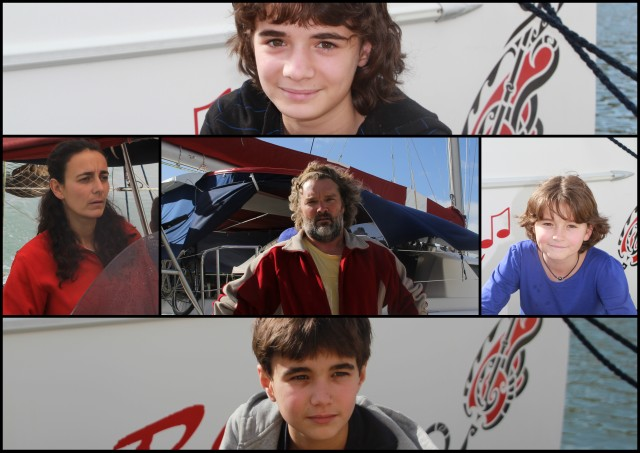 Prêts pour le départ. On est même passé chez le coiffeur Nous avons donc soigneusement vérifié chaque partie du bateau, des pompes de cales au feu de mouillage situé en haut du mât. Nous avons également emporté de la nourriture pour tenir un siège (vu les prix pratiqués en Polynésie française). Nous avons aussi préparé quelques repas que nous avons surgelés puisque les premiers jours de mer seront probablement un peu nauséeux. Cécile a fini par toucher l'argent de la vente des moteurs et a même réussi à vendre la voiture. C'est un peu de nous-même que nous allons laisser derrière nous, dans ce pays magnifique qui nous marquera à jamais. Les enfants garderont probablement le souvenir d'une escale amusante et instructive. Pour ma part, je ne pourrai oublier les paysages invraisemblables, la gentillesse des kiwis et la douceur de vivre de ce coin peu peuplé (je me souviendrai malheureusement aussi de ces gangsters de l'immigration dont le métier consiste à extorquer des sous aux visiteurs). Il nous faut maintenant aller de l'avant, vers d'autres rivages inconnus, tels les Gambier ou les Marquises... Euh oui, j'en vois qui rient dans leur barbe mais bon, cette envolée lyrique valait bien une entorse à la réalité bassement matérielle. Quoi qu'il en soit, on va visiter les Australes pour commencer... Pour la petite histoire, nous emportons avec nous pas moins de 150L de vin, 100L de coca, 20 kg de bidoche, 10 kg de fromage, quelques légumes et tout un tas de trucs introuvables ou excessivement chers en Polynésie, comme des épices, du café moulu, du yaourt, du saucisson, du chocolat, etc. Enfin, pour ceux qui s'inquiètent à juste titre de l'absence de bière dans la liste, je les rassure: nous emportons près de 15 pots de mélasse. De quoi fabriquer plus de 300L de bière rafraîchissante... |
||||||||||||||||||||
|
12 mai 2012 - Fini de rire Ca y est. On nous a libérés. En ce magnifique jeudi de mai, nous avons remis Let It Be à l'eau afin de mener les essais de moteur. Et je dois avouer que tout s'est bien passé. Avec nos nouveaux engins, on atteint aisément les 8 noeuds (15 km/h, soit une vitesse hallucinante pour notre navire).
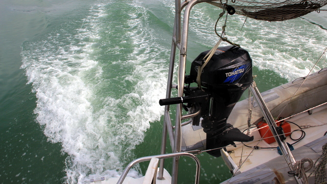 Je pourrais faire du ski nautique Nous avons fait des ronds dans l'eau pendant 3 heures avant de rentrer au port pour laisser le mécanicien rejoindre sa famille (nous le tenions en otage, au cas où les moteurs se seraient montrés récalcitrants, et aussi pour qu'il remplisse les papiers de garantie).
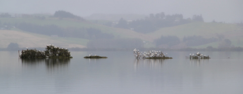 Oiseaux Une fois de retour à la marina, nous avons poursuivi les travaux dans le haubannage. Nous avons également achevé l'installation des régulateurs d'alternateur externes. Ensuite, nous avons enchaîné les courses à une cadence de forçat: nouvelles palmes pour Sidney dont les pieds ont anormalement grandi depuis l'année dernière, huile pour nos nouveaux moteurs, nouveaux cache-hublots pour qu'on soit encore plus à l'aise à bord, chauffage d'appoint au gaz pour la longue traversée qui s'annonce (on sera dans les 40èmes à l'orée de l'hiver), sans oublier des dizaines de BIB de vin et, évidemment, de la nourriture en suffisance, non seulement pour survivre en Polynésie (on va pas se faire avoir une deuxième fois), mais aussi pour affronter les 20 à 25 jours de mer qui nous séparent des Australes. |
||||||||||||||||||||
|
9 mai 2012 - Et alors? Nous sommes toujours au sec. Pourtant, nos moteurs sont placés, les hélices tournent, les coques sont poncées, peintes et décorées et l'ancre redressée. Alors que faisons-nous?
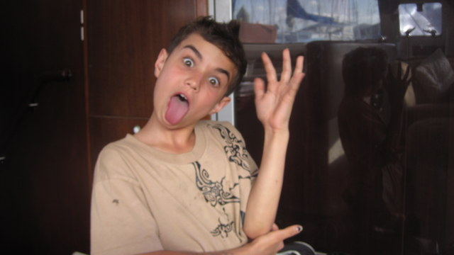 On devient fou La réponse est simple: lors du test des moteurs, j'ai réalisé que le safran bâbord était coincé. Un safran, c'est un peu comme un drapeau à l'envers: il y a une pièce solide (genre aile d'avion) qui va dans l'eau pour orienter le bateau et qui est reliée à une 'hampe' qui traverse la coque au travers d'un puits. Le safran ne tombe pas misérablement dans l'eau grâce à une rondelle en teflon fixée par un gros boulon à travers la hampe et dont le diamètre est supérieur à celui du puits. Justement, cette rondelle était cassée et le bras articulé en aluminium qui relie le safran au gouvernail était corrodé. J'ai fait usiner ces deux pièces et je les ai replacées. Tout est bien qui finit bien.
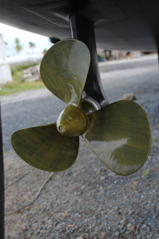 Superbe hélice (la bave jaune, c'est le produit anti-algues) Alors, pourquoi sommes-nous encore au sec? Parfois, quand Cécile s'ennuie après avoir donné cours aux enfants, je lui propose de l'envoyer en l'air à l'aide de ma manivelle magique et de mon winch. Cette fois, j'avais eu vent d'une action promotionnelle du gréeur local: un examen gratis du gréement. C'est le genre d'opportunité qui ne se refuse pas, même si, comme c'est notre cas, un gréement de moins de 3 ans est considéré comme neuf. J'ai hissé Gerry le long du mât. Pendant qu'il scrutait nos haubans, je devisais gaiement avec Cécile, occupés que nous étions à refixer le trampoline, tâche ingrate mais peu exigeante sur le plan intellectuel. Quand j'ai vu Gerry redescendre, j'ai compris à sa moue que nous avions un problème. Selon lui, le gréement était foutu et il fallait le remplacer sur le champ sous peine de couler, avec tous les inconvénients que cela comporte. Je ne me suis pas laissé impressionner par ces déclarations catastrophistes. Après tout, un gréeur qui prêche pour ses haubans, c'est normal. Je lui dit que j'allais y penser et, à peine avait-il le dos tourné, je ris sous cape en disant à Cécile d'aller elle-même jeter un coup d'oeil avec l'appareil photo, juste par acquis de conscience. Quand Cécile est redescendue du mât, on a arrêté de rigoler. Le gréement est mort: les têtes de hauban sont toutes fêlées et c'est un miracle que nous n'ayons pas pris le mât sur la tête (c'est ce qui arrive quand un hauban casse).
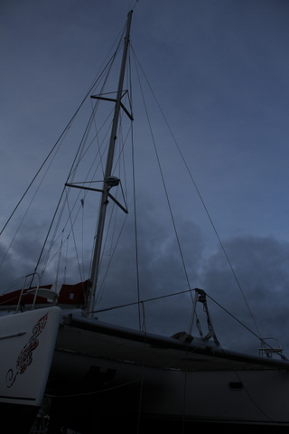 Remarquez: le genois est parti... Cette histoire s'est déroulée jeudi passé. Depuis lors, nous avons commandé les pièces, affalé le genois qui gît dans le cockpit, enlevé l'un des haubans et commencé le remplacement. On notera que pour enlever un hauban, il faut défaire des boulons serrés depuis longtemps, ce qui prend pas mal de temps: on chauffe au butane pendant 5 minutes, on met du lubrifiant, on essaie de dévisser, ça ne marche pas. On recommence la manoeuvre 2h plus tard, quand le lubrifiant a pénétré le filetage. Dans notre cas, il a fallu répéter le processus à 5 reprises pour arriver à déserrer les haubans. Au total, cette petite mésaventure va nous coûter une semaine de travail et environ 3000€. Enfin, on devrait retrouver la rivière dès demain pour des tests de moteur (alors que le nouveau gréement ne sera pas 'complet' mais les haubans peuvent se remplacer lorsque le bateau est à l'eau). |
||||||||||||||||||||
|
6 mai 2012 - Histoire fidjienne En septembre, lorsque nous avions passé commande pour deux nouveaux moteurs, j'avais imaginé naïvement que la vente des anciens engins rapporterait quelques deniers et me consolerait de la sorte des dépenses somptuaires engagées. Je les avais immédiatement mis en vente sur eBay pour la modique somme de 14000$ la paire, certain qu'une telle occasion ne manquerait pas d'attirer le chaland. Après 4 semaines, mon offre tenait toujours, sans le moindre amateur à l'horizon. Me rappelant des cours d'économie de mes lointaines études, je décidai habilement de baisser le prix.
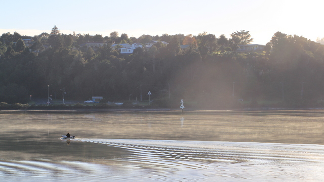 Petit matin sur l'eau. Cette stratégie originale n'apporta malheureusement pas les résultats escomptés. Mais, étant quelqu'un de tenace, voire têtu, j'ai persévéré. Et ce qui devait arriver, arriva: j'ai fini par trouver preneur, en la personne de Saïd, un fier Fidjien basané, qui obtint mes moteurs au terme d'une enchère serrée, clôturée à 2000$... Dès sa victoire savourée, Saïd devait se présenter au chantier afin de récolter son trophée: 400 kg de moteurs, embases et hélices, sans compter les câbles. Curieusement, alors que nous l'attendions, nous reçûmes un appel: sa belle-mère étant morte, il ne pouvait pas venir immédiatement. Qu'à cela ne tienne, le réconforté-je, nous sommes au chantier et ne bougeons pas pour quelques jours (à ce moment, je pensais encore que le chantier serait de courte durée...), les moteurs sont à sa disposition sous le bateau. Un peu plus tard, Saïd fit son apparition au chantier, au volant d'une voiture datant de l'entre deux guerres, avec ses deux fils et 1000$. Cécile l'accueillit gentiment, comme elle le fait toujours, surtout avec les gens des îles. Malheureusement, je lui expliquai que le marché consistait à payer 2000$ pour 2 moteurs et qu'en conséquence, j'en étais fort marri, mais ils ne pouvaient emporter la marchandise et devaient s'en retourner, à Auckland, sans butin. La discussion étant terminée pour ma part, je retournai à mes occupations. Cécile, quant à elle, ne put se résoudre à les renvoyer bredouilles. Suite à ses demandes répétées, je finis par accepter qu'ils prennent 1 moteur. Cécile, convaincue de la bonne foi de ses interlocuteurs, les laissa même partir avec un moteur, 2 hélices et 2 embases, rassurée qu'elle fut par la promesse d'un paiement imminent. L'idée était qu'ils reviendraient sous peu, avec les dollars, et sans devoir emprunter une remorque puisque le moteur seul qui restait à emmener entrait dans le coffre d'une voiture. Depuis, Cécile a régulièrement des nouvelles de ses amis. Par contre, on n'a toujours pas vu arriver Saïd pour le deuxième moteur, ni reçu le reste de l'argent. Force est de constater que nous sommes tombés sur le plus malchanceux des hommes: alors qu'il revenait de Whangarei vers Auckland avec son moteur, il s'était arrêté dans un fast-food. Sur place, des jeunes gens mal intentionnés ont sectionné les sangles qui retenaient le moteur. Evidemment, à la première occasion, le moteur est tombé de la remorque sur la route et, comble de malchance, la voiture qui les suivait l'a percuté. Saïd, pauvre travailleur immigré, n'a pas d'assurance. Il a donc dû payer de sa poche. En conséquence, lorsque Cécile s'inquiétait de ne pas recevoir l'argent, il lui expliqua que l'argent du 2ème moteur avait été dépensé pour réparer l'accident. Mais, bien sûr, il viendrait la semaine prochaine, après la paie, pour récupérer son bien. La semaine suivante, Cécile scruta l'horizon mais ne vit rien venir. Inquiète, elle appela Saïd. Ah, misère: alors qu'il était à mi-chemin entre Auckland et Whangarei, bien décidé à venir chercher son dû, Saïd a rencontré une tempête. Impossible de poursuivre la route... Ah, c'est curieux, dit Cécile. Ici, il fait grand bleu... Saïd lui promit qu'il viendrait la semaine suivante. La semaine d'après, manque de bol, sa voiture refusa de démarrer et, malgré toute sa bonne volonté, Saïd ne put venir à Whangarei. Le week end suivant, je perdais patience. Cécile informa Saïd que nous quittions bientôt le chantier et qu'en conséquence, il était temps qu'il vienne enfin apporter le reste de l'argent. Saïd promis qu'il serait là samedi, vers 14h. Vers 17h, ne le voyant point venir, Cécile l'appela. Il était en route mais, la nuit tombant, il devait s'arrêter chez un ami pour passer la nuit car il n'est pas prudent de rouler dans le noir. Toutefois, c'est sûr, le lendemain, il serait là... C'était sans compter sur la malchance. Incroyable: le lendemain, nous avons reçu un SMS du fils de Saïd: "Mon père a mangé du poisson empoisonné chez son ami. Il est tombé malade. Il est à l'hôpital...". Cécile jura, mais un peu tard, qu'on ne l'y reprendrait plus... J'ai bien proposé de rendre visite à ce malheureux sur son lit de mort mais la vue du moteur sous le bateau suffit à me rappeler qu'il faut parfois renoncer à se faire justice soi-même. N'empêche, si je croise Saïd, je lui fais bouffer sa bagnole, promis ! |
||||||||||||||||||||
|
29 avril 2012 - Nouvelles du front Lorsque j'avais commandé les moteurs, j'avais précisé que je souhaitais des moteurs complets avec embases. J'avais évoqué la problématique des hélices avec le mécanicien, sans préciser in extenso que j'en souhaitais deux nouvelles. Grave erreur de ma part puisque je me suis certes retrouvé avec deux moteurs flambant neufs mais sans hélices... Inutile de dire que sans ces ustensiles, l'intérêt de disposer de moteurs, même puissants, devient marginal. Bref, réalisant mon erreur, j'ai fait le nécessaire et, devinez quoi?, les nouvelles hélices arrivent en droite ligne de Belgique, où se trouve le centre des pièces détachées Volvo pour le monde entier. Autant dire qu'elles n'arrivent pas dans le quart d'heure...
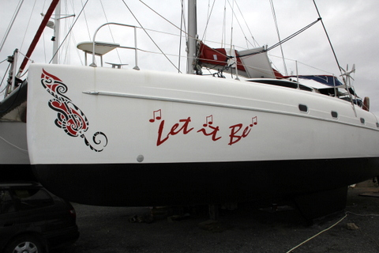 Et revoici les jeu des 7 erreurs... En attendant, on est coincé au chantier et on s'occupe comme on peut. Je répare des tas de petits trucs que j'avais postposés jusqu'ici, comme la douchette de pont, des éclats dans l'enduit de surface des coques, etc. Cécile, pour sa part, a mis un bon coup d'accélérateur pour l'instruction des enfants. Le résultat ne s'est pas fait attendre: Kenya a terminé sa 6ème primaire. Elle entre maintenant chez les grands. Enfin, façon de parler puisqu'elle reste avec les petits et la même institutrice (qui devient donc professeur, en plus de toutes ses autres fonctions à bord). Félicitations Kenya !!!
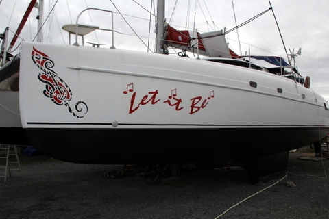 Avez-vous identifié la différence (à part la disparition de la voiture)? Pour le reste, comme indiqué sur la page d'accueil du site, nous avons changé nos plans. Nous n'allons plus à l'ouest mais bien à l'est puis au nord. On retourne aux Gambier, via les Australes, puis on monte sur Hawaii. On va profiter de cette nouvelle boucle en Polynésie pour visiter les îles qu'on avait loupées en 2009/2010: les Australes et les Tuamotus du Sud. Ensuite, si on est d'attaque, on se fait une petite boucle au nord: Alaska, Colombie Britannique, Côte Ouest des USA, Mexique puis re-Hawaii. Au retour d'Hawaii, nous visiterons les îles de la Ligne, les Kiribati, les Samoa et peut-être les Vanuatu et la Nouvelle Calédonie. Pourquoi cette décision? Parce que tel est notre bon plaisir.
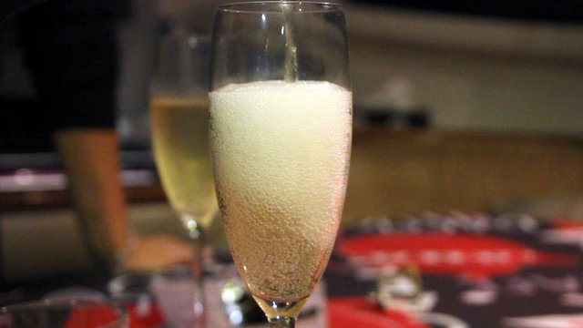 Kenya finit ses primaires !! Félicitations !!! Et aussi parce que le voyage vers l'ouest impliquait de visiter des pays peu sûrs, dans des régions où la malaria sévit et sans espoir de retour. Et aussi pour pouvoir faire la file à l'ambassade des USA à Auckland, ce qu'on a fait ce matin pour obtenir des visas pour yachties. Alors on s'est dit qu'on allait plutôt se la couler douce pendant encore quelques années dans le Pacifique. |
||||||||||||||||||||
|
22 avril 2012 - Fin du tag L'epoxy dont nous avons enduit les coques sert à parfaire l'étanchéité du gel coat (c'est l'enduit de surface de la fibre de verre qui compose notre bateau).
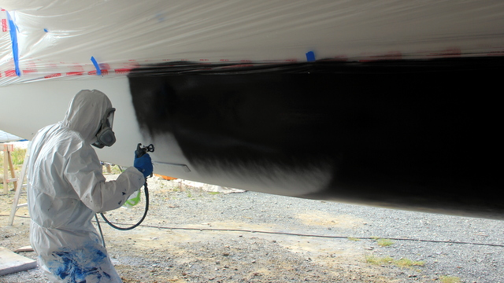 Le peintre étale l'antifouling Cependant, l'epoxy ne tient pas les algues éloignées des coques. Pour cela, on met de l'antifouling. Dans notre cas, il est noir, comme l'âme des damnés.
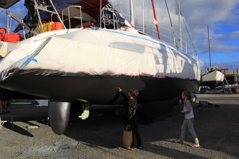 Sidney doit le toucher pour le croire Et voilà le travail! Nos coques sont maintenant protégées: 3 couches d'epoxy pour l'imperméabilité et 2 couches d'antifouling pour garder des coques propres. On va gagner en vitesse, d'autant plus que le grattage des couches précédentes nous a fait gagner au moins 100 kg. On peut maintenant se focaliser sur la mise en place des moteurs (de ce côté, on traîne un peu car les nouveaux moteurs sont plus larges que les anciens, ce qui empêche d'utiliser l'ancien berceau).
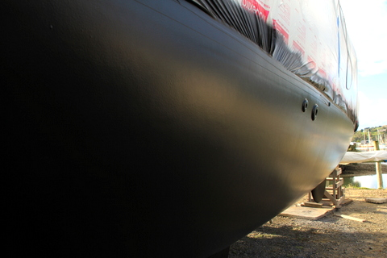 C'est nickel. On dirait un sous-marin furtif En attendant que les mécaniciens pointent le bout de leur nez, Cécile continue à faire classe aux trois garnements le matin et à visiter méthodiquement chaque cabine l'après-midi. Elle sépare le bon grain de l'ivraie. C'est fou ce qu'on a pu accumuler en 3 ans. On a même retrouvé au fond d'une cabine le ventilateur sur pied qui m'avait sauvé la vie à Panama. Pour ma part, c'est la routine: remplacement des lumières de cockpit, nettoyage de la gouttière de récupération d'eau de pluie, remplacement de la douchette de pont, changement de la membrane de l'osmoseur, etc. Le grand re-départ approche...
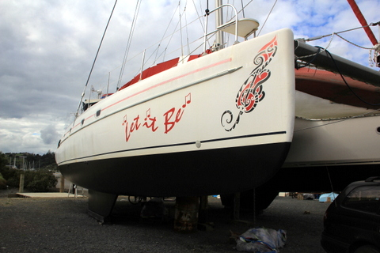 Il est pas beau? |
||||||||||||||||||||
|
19 avril 2012 - Cure de jouvence Je vous en parlais récemment, le grattage touche à sa fin et le ponçage s'annonce comme l'un des grands succès de cet automne. De fait, il aura fallu 2 jours et toute la hargne de jeunes gens pleins d'hormones pour blanchir nos coques.
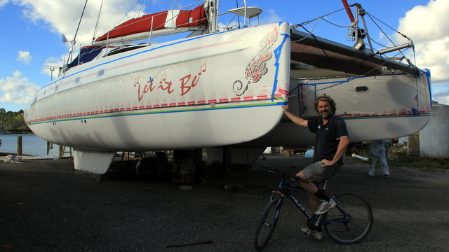 Les coques grattées, poncées, lavées et emballées En ce beau mercredi, les coques étaient vierges à nouveau, prêtes à recevoir quelques nouvelles couches de peinture avant de reprendre la mer. Pour faire bonne mesure, nous avons décidé de les enduire d'époxy, afin de les rendre imperméables à l'eau, et d'antifouling, pour les raisons précédemment citées. Comme on n'en était plus à un détail près, on a demandé aux gars du chantier de nous faire la totale: au lieu de la peinture au rouleau, on a opté pour une aspersion.
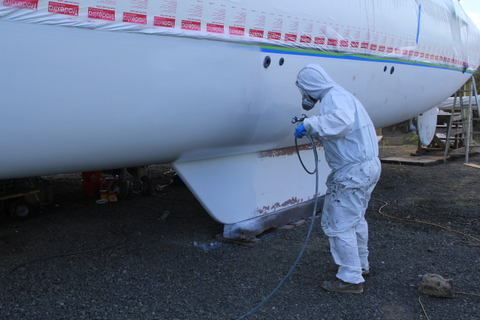 Le peintre fait son office Certes, me direz-vous, c'est bien gentil mais qu'est-ce que ça change? Premièrement, il faut 'emballer' le bateau, ce que nous fîmes en ce jeudi, afin de ne pas peindre les hublots, les décoration maories, etc. Deuxièmement, la peinture au pistolet nécessite quelqu'expérience et il convient de faire appel à un spécialiste qui nous livrera un travail d'artiste, sans les irrégularités propres à la peinture au rouleau ou au pinceau. Cela produit un rendu de surface irréprochable et, grâce à cet enduit sans défaut, notre navire fendra les flôts avec encore plus d'aisance qu'auparavant, ce qui tient presque de la magie.
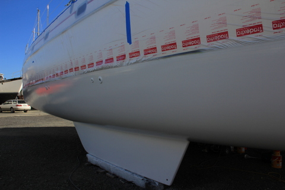 La première couche d'époxy est posée Et que faisons-nous pendant que ces gens s'amusent? Nous tirons des cables (eh oui, on tire ce qu'on peut). En effet, les nouveaux moteurs sont entrés dans leur espace (ce qui n'était pas évident à première vue, puisqu'on avait opté pour des 4 cylindres en lieu et place de nos 3 cylindres précédents). Jusque là, pas de souci. Encore fallait-il les connecter au tableau de commande... Je vous passe les détails mais je confirme que faire passer 6m de cables (18 au total) à travers cloisons et goulottes relève de la gageure. En outre, il a fallu allonger la connectique bâbord, ce qui a nécessité pas moins de 36 soudures et autant de thermoplastiques. Vive la voile au sec !!! Et merci à Dirk pour son aide inestimable !!!
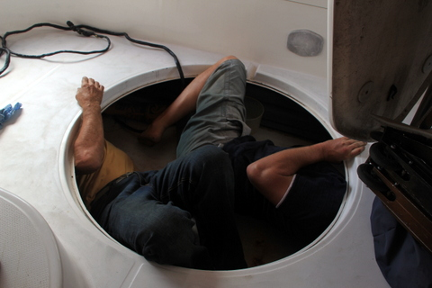 Eric et Dirk tirent les cables... |
||||||||||||||||||||
|
16 avril 2012 - On prend les mêmes et on recommence Quand je pense que certains s'imaginent que la vie de tourdumondiste consiste à ne rien faire au soleil, à part boire des bières, évidemment. Et bien qu'ils se détrompent ! Pas pour la bière, ni pour le soleil mais bien pour la glande.
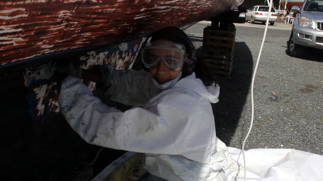 Cécile est bien protégée Comme je l'ai déjà indiqué précédemment, les coques du bateau sont enduites d'une peinture nucléaire propre à repousser toutes les tentatives de colonisation des algues. Cette substance, appelée poétiquement 'antifouling', doit être appliquée chaque année, faute de quoi les coques se transforment en jardin botanique. Hélas, après 10 ans de ce traitement, ce ne sont pas moins de 25 couches qui se superposent et, comme dans la vraie vie, au bout d'un moment, ça ne tient plus: la couche du dessus tombe et emmène avec elle x étages inférieurs. Bref, il est temps de tout raser et de recommencer à zéro.
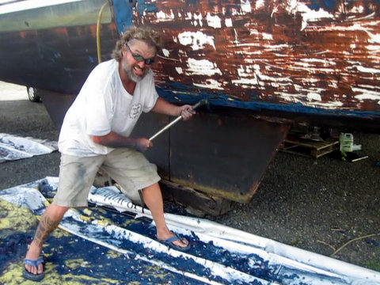 Eric avec son grattoir (remarquez que nous respectons l'environnement: on recueille les pelures sur une grande bâche en plastique) C'est précisément là que nous en sommes. Ainsi, il ne suffit pas de changer les 2 moteurs (ce qui, mathématiquement, provoquera un nombre incalculable mais non nul de pannes dans un avenir immédiat), il nous a également paru utile de gratter les coques afin d'en enlever toute trace de peinture. Certains parmi vous, les plus optimistes, pensent que cette tâche se pratique à l'aide de machines modernes et silencieuses. La vérité est toute autre: nous disposons d'un grattoir, genre lame de rasoir en tungstène, et nous rasons littéralement les coques à grand renfort de ahanements de bûcheron, le tout accompagné du bruit strident de la lame qui frotte contre la coque. C'est non seulement insupportable pour les oreilles mais c'est en plus très fatiguant.
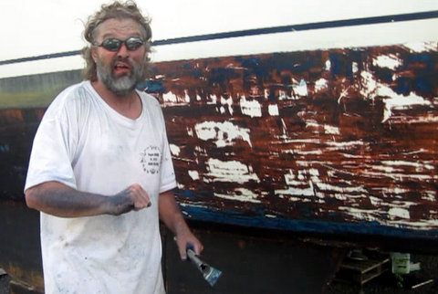 Eric imite le bruit strident (oui, je sais, ça ne parle pas mais bon, hein!!!!) Ca fait maintenant 5 jours qu'on gratte et, passez-moi l'expression, nous en avons plein le cul. Si, si. J'ai déjà usé 3 paires de bras et percé 8 tympans (dont celui de tous nos voisins de chantier qui nous haïssent maintenant jusqu'à la 13ème génération). En plus, comme la peinture est toxique, on est obligé de se protéger les yeux et la bouche. Sans compter les mouchettes urticantes qui rôdent au ras des pâquerettes et qui vous dévorent les orteils. Bref, que du plaisir. Enfin, en ce beau lundi, nous avons terminé le grattage. Maintenant, place au ponçage: c'est la même chose mais mécanisé. On remplace le bruit strident genre 'craie sur tableau' par le ronron des aspirateurs de poussière. Tudjoss, il faut les mériter ces putains d'atolls...
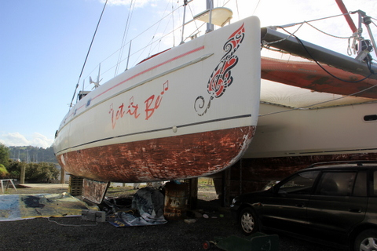 La coque est grattée. Demain, on ponce |
||||||||||||||||||||
|
11 avril 2012 - Whangarei, Kenya a 13 ans Près de 4 mois après l'avoir quitté, nous avons retrouvé notre bateau au ponton, à Whangarei. Au ponton? Certes, nous l'avions laissé en pleine rivière mais une tempête a provoqué la rupture du pilier sur lequel nous étions amarrés et notre beau catamaran a failli se retrouver sur les berges. Heureusement, il s'est trouvé des âmes charitables pour le ramener au ponton. Le conditions dantesques ont même provoqué la fermeture de la marina pendant 2 jours...
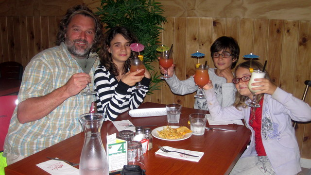 Bon anniversaire Kéké Quoi qu'il en soit, nous avons retrouvé notre magnifique voilier et, sans attendre, nous avons emmené Kenya au restaurant le plus huppé de la région pour célébrer son anniversaire en grande pompe.
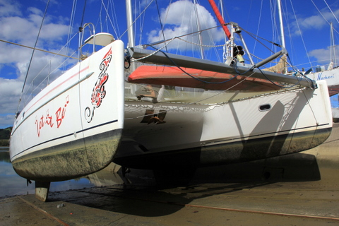 Let It Be sèche au soleil du 'slipway' Ensuite, nous avons couru dans tous les sens pour préparer notre sortie de l'eau. Nous avons en effet rendez-vous avec l'histoire, avec un petit s, pour remplacer nos moteurs essoufflés.
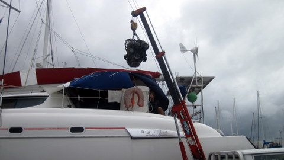 Le moteur bâbord s'élève dans les cieux En ce magnifique 10 avril 2012, nous avons pris le chemin du chantier. Forts de notre expérience de l'année passée, nous avons traversé cette épreuve sans peine et, comble de chance, les mécaniciens se sont présentés à l'heure dite. En cet instant solennel, nos moteurs gisent sous le bateau et les coques n'attendent plus que leurs nouveaux occupants pour se sentir en pleine forme. Au rayon des nouvelles mortifiantes, on notera que la peinture que nous avions étalée à grand'peine en 2011 n'a pas vraiment adhéré, tant et si bien qu'il nous faut maintenant prévoir un plan B: le grattage intégral (et, contrairement aux usages, on ne gagne rien au grattage...). Je vous en reparlerai sous peu... |
||||||||||||||||||||
|
27 mars 2012 - K7600 - Australie, Fin du voyage Voilà, c'est fini. Après 2 mois et 11.000 km en Australie, il est temps de rentrer au bercail et de retrouver Let It Be à Whangarei.
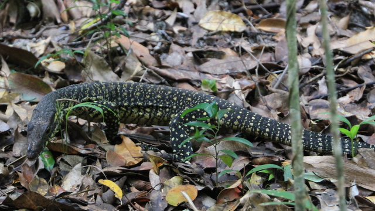 Un gros lézard L'Australie nous a séduit, tant par ses paysages somptueux que par la chaleur de l'accueil. Ce pays gigantesque nous a étonné par la qualité de vie qu'il offre à ses habitants. Il possède un peu près tout ce que dont on peut rêver, y compris des infrastructures et une sécurité urbaine qui rendent la vie bien sereine. Les plages sont légions, la nature généreuse et la population clairsemée. Sur la côte est, on est bien loin des clichés style "cul-terreux vivant dans une cabane entourée de kangourous au milieu du désert".
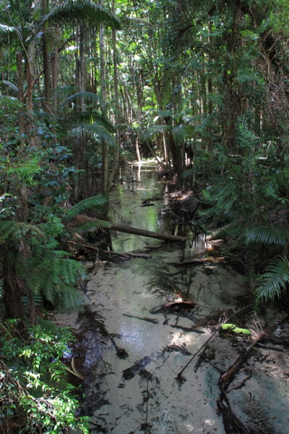 Rivière au fond de sable blanc Nous avons même pensé à nous installer un peu mais les conditions d'entrée sont trop sévères pour les vieillards de plus de 45 ans... Malgré nos diplômes et notre maîtrise de la langue de Shakespeare, impossible d'obtenir un visa à long terme.
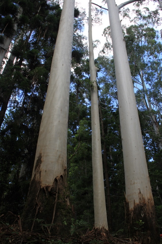 Ici, les poteaux téléphoniques poussent tout seuls Quoi qu'il en soit, nous retournons en Nouvelle Zélande, certes plus spectaculaire et sauvage mais aussi plus rustique et plus froide, que ce soient le climat ou les habitants. |
||||||||||||||||||||
|
25 mars 2012 - K7400 - Australie, Fraser Island - Day 3 Fraser Island a été créée pour que les hommes puissent s'amuser avec leur 4x4. C'est formidable. Pour ma part, je préfère me consacrer à la méditation, à l'écriture, au macramé et à l'absorption de jus de raisin. Cette ostentatoire démonstration de puissance par véhicule interposé me laisse indifférent.
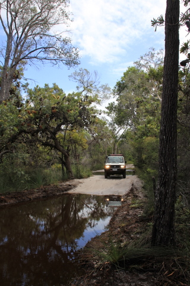 Cécile arrive près d'un étang Cécile, comme tout le monde le sait, préfère les gros cubes... Ce que beaucoup ignorent, en revanche, c'est qu'elle est également très friande de passage d'obstacle en véhicule tout-terrain. Et là, je dois dire qu'elle s'est défoulée. Ce ne sont pas moins de 200 km de pistes qu'elle a avalés en 2 jours (et nous avec, par solidarité féminine).
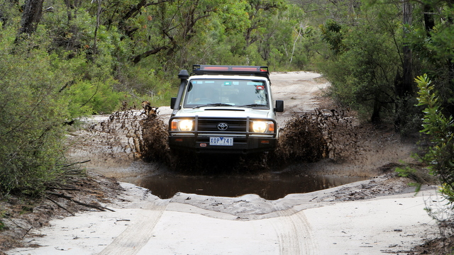 Rien n'arrête Cécile Tout y est passé: à donf sur la plage, en douceur dans les dunes, en travers dans les courbes des pistes, en immersion dans les gués et en crapaud dans les dévers. Rien n'arrête Cécile.
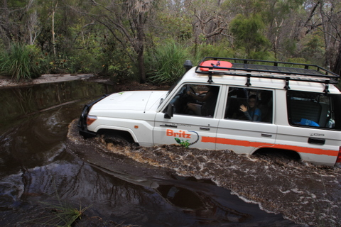 Cécile traverse le lac Enfin, si, quand même. A force de quadriller l'île, on a fini par trouver une route bloquée. Le pont s'est écroulé lors de la dernière crue. J'ai cru un moment que Cécile allait tenter un saut mais elle s'est ravisée en dernière minute et elle nous a gentiment ramenés au campement.
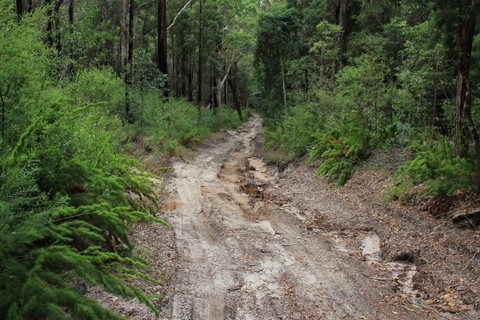 Cécile n'a pas peur des chemins pentus et ravinés Vraiment, une plaine de jeux pour adultes de cette taille, il n'y a qu'en Australie que l'on peut trouver cela. Le seul réel reproche que l'on puisse adresser aux responsables, c'est l'absence de zone de dépassement. Quand on est coincé derrière une chochotte qui se traîne à 90 km/h sur la piste, on est obligé d'attendre la plage pour le dépasser.
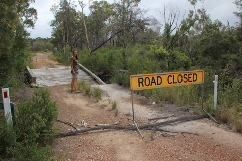 C'est la seule manière de l'arrêter |
||||||||||||||||||||
|
24 mars 2012 - K7300 - Australie, Fraser Island - Day 2 Fraser Island est la plus grande île de sable au monde, résultat de 700.000 ans de dépôt marin. On y trouve du sable, du sable et des arbres qui poussent dans le sable, cela va de soi.
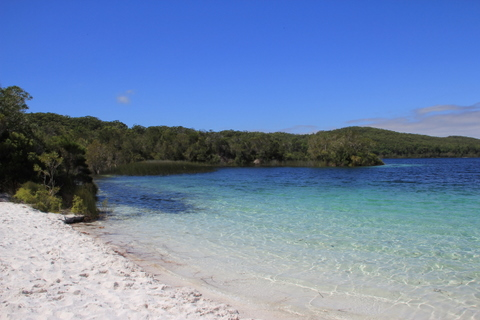 Le lac Mc Kenzie au centre de l'île Toutefois, loin des côtes, se sont formés des lacs d'eau douce aux rivages sablonneux. Quand il fait beau, ce qui est rare ces temps-ci, le spectacle de l'eau douce venant caresser les rives blanches est étonnant, presqu'autant que la baignade dans l'onde chaude. Hormis les dizaines de touristes qui s'agglutinent sur les berges, on ne serait pas loin du paradis sur terre.
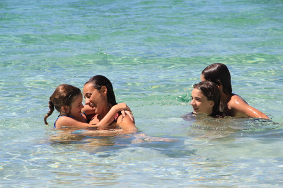 On s'amuse dans de l'eau douce à 25°C Par quel miracle peut-il y avoir des lacs d'eau douce au milieu d'une dune géante? C'est la question qui me taraudait l'esprit pendant que je regardais distraitement les enfants s'ébrouer. La réponse m'est apparue bien plus tard, sur une pancarte prévue à cet effet: l'eau des lacs provient uniquement de la pluie, il n'y a ni source, ni rivière affluente. Simplement, les feuilles des arbres s'accumulent sur le sol et se décomposent lentement, formant un film imperméable. Petit à petit, ce film recouvre le sol qui, par endroit, si la topographie le permet, se couvre d'eau et forme un lac.
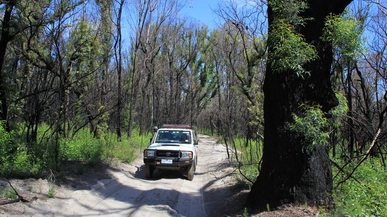 Notre 4x4 a fière allure dans la forêt brulée Après la baignade, nous avons sillonné l'île à bord de notre véhicule tout-terrain. On en a profité pour traverser une forêt brûlée. Les pistes en sable sinueuses sont très agréables à pratiquer et les paysages définitivement exceptionnels.
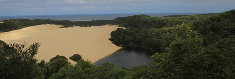 Un autre lac, flanqué d'une belle plage, avec l'océan en arrière-plan Vers 17h, nous sommes rentrés au camp de base, juste à temps pour faire à manger avant que le soleil ne se couche. Vu qu'on a pas de lumière, c'est mieux de finir le repas avant la nuit. Vers 21h, nous nous sommes couchés, juste avant que la pluie ne commence à tomber, de manière assez monotone et bruyante, il faut bien le dire. Je comprends mieux maintenant pourquoi tout est si vert sur cette île. |
||||||||||||||||||||
|
23 mars 2012 - K7300 - Australie, Fraser Island Après les parcs d'attractions artificielles, nous avons décidé d'aller visiter les parcs d'attractions naturelles. Pour commencer, nous avons sélectionné Fraser Island, paradis terrestre avec lagons d'eau douce inclus. Nous avons changé de camionnette à Brisbane, optant cette fois pour un Toyota Landcruiser V8, bien bruyant et bien costaud. Nous avons également copieusement dégraissé: au lieu des 14 sacs que nous trimbalions jusqu'à présent, nous nous sommes contentés d'un seul bagage pour toute la famille. Dans le 4x4, une fois placés la tente pour 6, la tente pour 2, 5 matelas galette, 5 oreillers, 5 sacs de couchage, 5 fourchettes et 5 assiettes, il ne reste plus de place. Tout au plus sommes nous parvenus, à force d'ingéniosité et de pugnacité, à placer le PC, l'iPad et bien évidemment la nourriture.
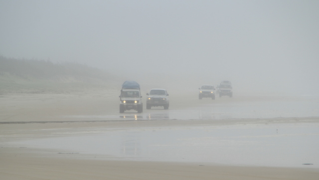 L'artère principale de l'île: la plage est, où le trafic est dense De fait, c'est bien beau d'aller sur la plus grande île de sable du monde (plus de 120 km de long), située à 3h de route de Brisbane, encore faut-il y survivre. Ce parc naturel n'accueille que les 4x4 et ne dispose d'aucune route, que des pistes. On y trouve 3 épiceries qui pratiquent l'extorsion en bande organisée: 2.1$ le litre de diesel, par exemple. On nous avait prévenu: amenez votre nourriture avec vous, sinon c'est le racket...
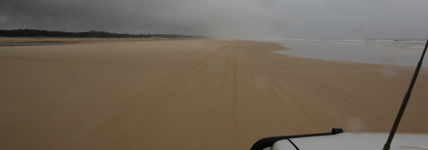 100km de plage On a quitté Brisbane sous une pluie battante. Le 4x4 était rempli à tel point qu'ouvrir les portières à l'arrière relève de l'acrobatie, voire de la magie: la moindre inattention et c'est l'écroulement, on se prend les bagages sur la tête. Nous nous sommes présentés à Eskip Point vers 13h afin de prendre la barge vers Fraser Island. Avant cela, nous avons bien évidemment versé notre cote-part à l'entretien du parc: permis pour le véhicule, 50$; permis de camping, 100$; bac pour le passage, 100$. Faut vraiment être motivé pour venir ici.
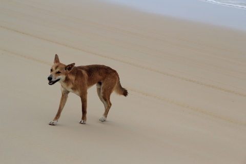 Nous croisons un dingo indifférent A peine débarquée sur la plage, Cécile a une fois de plus démontré ses talents de pilote. Roulant sur la plage à plus de 80 km/h, elle a fait fi de tous les obstacles qui se sont présentés sur la route, malgré des conditions atmosphériques pour le moins difficiles. Traversant les rivières, gravissant les dunes, dévalant les pistes abruptes, elle nous a conduits directement au camping (que nous avions réservé, à la demande des autorités).
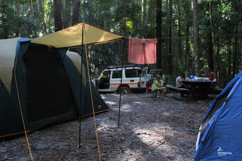 En fin de journée, nous sommes installés comme des princes Le camping en question est situé au milieu de l'île, dans un enclos électrifié qui maintient les dingos à l'écart. Ces chiens sauvages sont invasifs et parfois agressifs. Il vaut mieux s'en tenir éloigné. Nous avons planté notre tente sous un petit crachin, au milieu d'une forêt dense et humide, faite d'eucalyptus, de kauris, de fougères, et d'autres arbustes. Aussitôt fait, la pluie a cessé et nous avons mangé nos enièmes tacos durant ce périple avant de regarder notre épisode quotidien de Shameless dans la tente des enfants et d'aller dormir à 21h. L'aventure continue... |
||||||||||||||||||||
|
20 et 21 mars 2012 - K7000 - Australie, Golden Coast A 100 km au sud de Brisbane, sur la côte est de l'Australie, se trouve un endroit que l'on appelle Gold Coast. C'est un immense village de vacances. Tout ce que l'Océanie compte comme touristes se donne rendez-vous ici pour s'amuser. Il y a tout: la plage de sable fin, la chaleur, l'océan, les vagues, les restaurants, les campings, les supermarchés, etc.
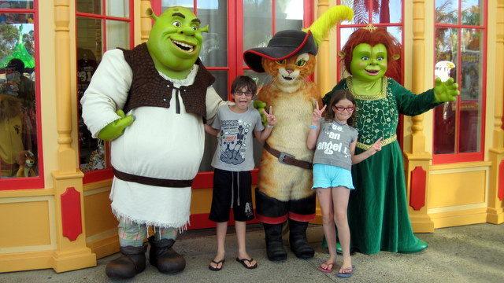 Visite à Dreamworld C'est vraiment extraordinaire. Les bus se succèdent en provenance de Brisbane et déversent leur cargaison de citadins en mal de vacance. Ici, tout est fait pour eux, c'est l'industrie.
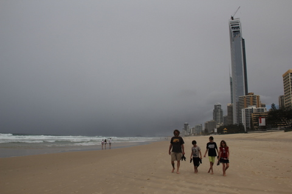 C'est curieux ces gratte-ciel au bord de la plage Comme nous ne sommes pas comme les autres, nous avons décidé d'innover. Nous avons visité Dreamworld, un immense complexe attracto-moulinesque où l'on vous secoue du matin au soir afin de vous faire vomir. Les enfants adorent ça. En fin de compte, les parents aussi.
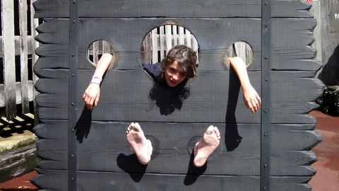 Qu'est-ce qu'on rigole quand même Cécile a essayé toutes les attractions, même celle où l'on tombe d'un immeuble de 25 étages. Les enfants et moi avons préféré nous concentrer sur des activités moins vaines comme les auto-tamponneuses ou le fameux hydrocoaster, un tube rempli d'eau où l'on fuse à des vitesses hallucinantes dans un dinghy dégonflé.
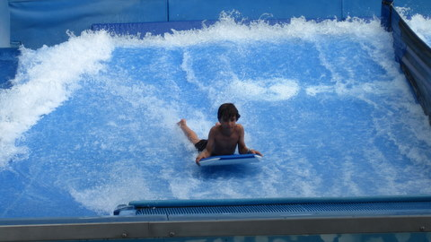 Sidney adoooooore le body board Il n'y a pas à dire, la Gold Coast mérite bien sa réputation de paradis du tourisme. En plus, il fait chaud mais pas trop. Je recommande vivement cet endroit à tous ceux qui passent par ici (car pour faire le voyage rien que pour ça, faut être Néozélandais en manque de soleil...) |
||||||||||||||||||||
|
18 mars 2012 - K6620 - Australie, Byron Bay Quoi de mieux qu'un peu de pluie pour rompre la monotonie d'un voyage? L'ouragan Lua a frappé les côtes du Queensland (au NE de l'Australie) ce dimanche et, bien que nous soyons à plus de 1500km du point d'impact, nous en subissons les effets.
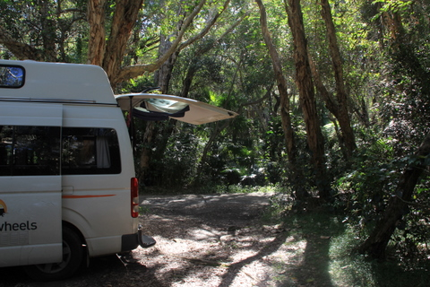 Notre campement dans les bois Nous nous approchons néanmoins de Brisbane, située presque au milieu de la côte est australienne. Nous nous attendions à une végétation minimaliste, genre maquis, mais nous avons trouvé des forêts tropicales. Cela nous a rappelé certaines îles que nous avons visitées dans le Pacifique.
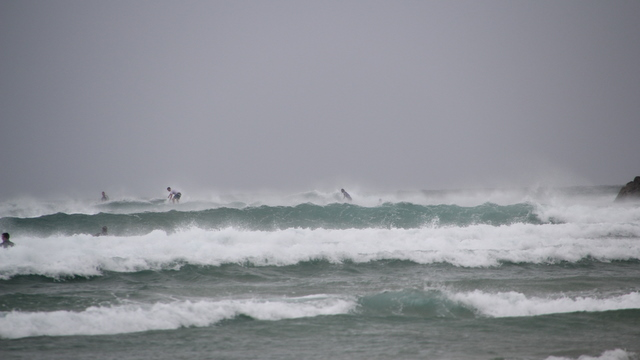 Les vagues de Byron Bay, bondées malgré les conditions climatiques adverses Malgré les nuages, les bourrasques et les averses éparses, nous avons décidé d'aller surfer à Byron Bay. En effet, il est écrit, dans notre guide touristique, que c'est la Mecque des surfeurs en Australie. Alors, nous avons pris notre courage à deux mains et nous avons plongé dans l'eau à 25°C.
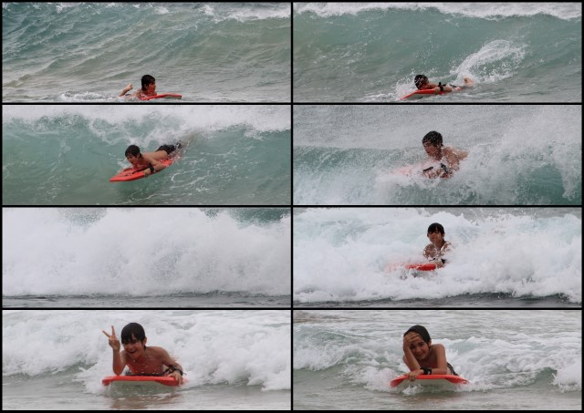 Sidney adoooooore le body board D'ores et déjà, je peux confirmer que notre planche est bien trop petite pour moi: je coule. Par contre, Sidney la trouve à sont goût et fait preuve d'un certain talent pour kiffer la vague. Kenya ne se débrouille pas mal non plus, même si elle n'a pas la tenacité de son petit frère pour faire le 'ride' parfait. |
||||||||||||||||||||
|
16 mars 2012 - K6100 - Australie, Port Macquarie Depuis qu'on remonte de Sydney vers Brisbane en longeant la côte est de l'Australie, c'est très monotone: 28°C le jour, 20°C la nuit et d'interminables plages de sable fin où viennent mourir avec fracas des milliards de vagues.
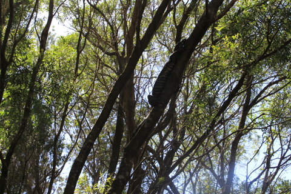 Question: trouver l'intrus... Alors, on roule, on nage, on dort, on nage, on roule, on nage, on dort et j'en passe et de meilleures. De temps en temps, on mange aussi. C'est la routine.
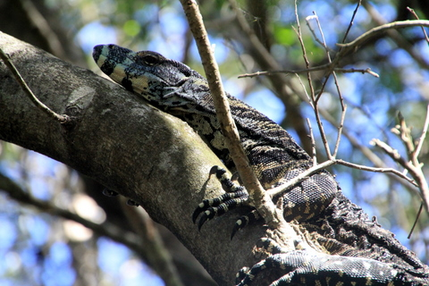 Bon, je reconnais, c'est pas un intrus. Mais il est pas mal quand même... Hier, alors que nous allions du campement vers la plage (où était-ce l'inverse?), nous sommes tombés nez à nez avec un lézard. Rien de surprenant, me direz-vous. Et pourtant, cet animal-là avait de quoi surprendre, pas moins de 2m de long, selon moi, et de longues griffes pour mieux nous déchirer, mon enfant.
En nous voyant, il s'est lentement hissé dans un arbre et s'est mis à dormir sans autre considération pour les misérables bipèdes que nous sommes.
En fin de journée, nous avons trouvé un campement préhistorique: nous sommes dans une forêt humide, à la végétation dense, composée de palmiers, eucalyptus et plantes grimpantes en tous genres. C'est Jurrasic Park !! A 200m se trouve une plage sauvage et déserte où nous avons défié les rouleaux pendant 2h sans voir personne. C'est bien simple, dans un moment d'égarement, nous avons tous jeté nos maillots afin de profiter de la mer dans le plus simple appareil, au grand plaisir des enfants. |
||||||||||||||||||||
|
13 mars 2012 - K5480 - Australie, Sydney City Après deux jours de marche dans Sydney, je suis trop crevé faire de long discours, place aux photos.
On notera que cette photo a été prise d'un ferry, engin très pratique pour se déplacer dans Sydney.
|
||||||||||||||||||||
|
12 mars 2012 - K5440 - Australie, Les animaux de Sydney Avant d'entamer une étude architecturale de la ville, je voulais vous entretenir d'un sujet qui me tient particulièrement à coeur (et au coeur de Cécile aussi): les animaux de Sydney.
Si les buildings d'ici ressemblent fort aux buildings de chez nous (mais en plus moderne), la faune, elle, est étrange et peu familière. On y trouve bien sûr des pigeons mais avec une petite houpette ridicule qui les rend rigolos.
On y retrouve les perroquets multicolores (dont je ne me lasse pas, mon seul regret est de ne pas pouvoir les enregistrer au petit matin).
Plus surprenant, dans le jardin botanique, on trouve une colonie de chauve-souris géantes (qui devraient d'ailleurs vider les lieux dans un avenir proche car ils tuent les arbres lentement).
Le soir, dans le parc, on peut faire des rencontres inopinées: par exemple avec un petit marsupial aux griffes acérées, se promenant dans les poubelles en quête d'une pitance assurée (vu le gabarit de l'animal). Pas farouche du tout et très adroit, il a failli partir avec le doigt de Sidney qui s'était approché un peu trop.
Enfin, nous avons eu la chance extraordinaire de tomber sur le Sidney de Sydney, petit animal sauteur qui rôde en général du côté de l'opéra.
|
||||||||||||||||||||
|
11 mars 2012 - K5420 - Australie, Sydney Vers midi, nous sommes arrivés à Sydney, la plus grande ville d'Australie avec ses 4,5 millions d'habitants.
Nous sommes allés directement au centre ville afin de manger des nouilles, plat très réputé par ici.
Ensuite, nous avons visité le coeur de la ville, désertée par ses habitants. Il n'y avait, en ce beau dimanche de mars, qu'une centaine de milliers de personnes insouciantes, profitant du climat fort agréable pour ne rien faire, contrairement à nous qui visitions.
Nous avons parcouru les quais et jalonné notre futur parcours touristique. En effet, ce dimanche était consacré aux repérages. La vraie visite aura lieu demain, avec l'opéra, le pont, le quai circulaire et tutti quanti. |
||||||||||||||||||||
|
10 mars 2012 - K5320 - Australie, Lake Burragorang Nous avions trouvé un petit campement sobre, à la dure diront certains, au fin fond d'une piste, juste au bord de la Grande Falaise (quand on met des majuscules, on crée la légende). Tout était merveilleux et nous nous réjouissions déjà à l'idée de passer une nuit dans le bush, sous le ciel étoilé.
C'était sans compter sur l'arrivée tardive de deux voitures remplies de jeunes Teutons qui ont réussi à torpiller ma douce nuit jusqu'à 1h du matin en éructant des propos incompréhensibles, en allemand, bien entendu. Avec une mesquinerie délectable, je me suis levé dès 7h et je me suis à mon tour mis à déclamer des propos insipides mais en français et à pleins poumons. Ah ah ah, j'ai même réussi à faire participer les enfants à cette vengeance. Ils ne se sont pas fait prier. Ils ont gentiment fait plein de bruit. Seule Cécile est restée de marbre, ne cautionnant pas mes gamineries d'ado prépubère.
Après m'être bien vengé, nous sommes tous partis vers le lac Burragorang, dont les 2 particularités, outre le fait d'avoir un nom imprononçable, sont d'être rempli à un niveau inégalé depuis des décennies et d'être au bout d'une piste encaissée, ravinée et nid-de-pouleuse de 20 km. Autant dire qu'avec notre camionnette pas 4x4 du tout, nous avons fait l'objet de moqueries de la part des possesseurs de gros tout-terrains (même celui qui avait encastré son bijou dans un arbre a réussi à nous adresser un sourire).
Arrivés au bout de la piste, nous avons pu admirer le lac, perdu dans son écrin de verdure. Il n'y a pas la moindre route, la moindre maison, la moindre ligne haute-tension pour gêner la vue. Rien. C'est ahurissant. A tel point que Sidney et Cécile ont entamé un duel pour savoir lequel des deux avait les plus grands pieds.
Nous sommes ensuite repartis vers Sydney, ce qui nous a valu une heure de tape-cul pour rejoindre la route et 2 heures de zigzags dans la campagne péri-urbaine pour trouver un camping. Nous avons fini par tomber sur une aire toute proprette, vraisemblablement destinée aux citadins qui veulent se la jouer outback le temps d'un week end sans trop se fatiguer: les emplacements sont bien indiqués et chacun d'entre eux dispose d'un BBQ privé. |
||||||||||||||||||||
|
9 mars 2012 - K5140 - Australie, Blue Mountains Enfin ! La pluie a cessé subitement, alors que nous roulions vers Orange. D'un coup, comme ça. Les nuages sont partis, la route a séché et Cécile a écrasé le champignon. Notre van s'est cabré et s'est élancé à pleine vitesse dans les plaines sauvages. A plus de 60 km/h, nous avions toutes les peines du monde à distinguer les perroquets blancs dans les eucalyptus décharnés.
Nous sommes partis vers les Blue Mountains, situées à 150 km à l'ouest de Sydney, qui, comme leur nom ne l'indique pas, sont rouges. J'ai beau réfléchir, je ne comprends pas pourquoi on les appelle "Montagnes Bleues". Elles sont rouges le matin à l'aube, rouges en plein soleil le midi et rouges au crépuscule. C'est encore une spécificité australienne, comme le nom des villes ici.
Sans rire, ils ont dû organiser un grand concours des noms les plus originaux pour baptiser leurs villes. Alors que chez nous c'est St Machin sur Chose, Biduleville, Charleroi ou Schmudkerke, ici c'est Wagga Wagga, Bombala, Yass, Deniliquin, Kalangadoo ou Tumut. La palme du nom le plus rigolo revient quand même à une ville qui s'appelle: Gol Gol. C'est pas une blague, il y a vraiment des Golais Golais...
Quoi qu'il en soit, nous avons déjà parcouru plus de 8.000 km en Australie, dont 3.000 en Tasmanie, et nous n'avons pas encore trouvé d'or. C'est très frustrant et j'envisage d'ores et déjà de déposer une plainte au syndicat d'initiative quand on arrivera à Sydney. Par contre, avec le soleil est revenue la bonne humeur et le plaisir de voyager. |
||||||||||||||||||||
|
6 et 7 mars 2012 - K4440 - Australie, Burrinjuck Waters Ca ne s'arrange pas, de mémoire de kangourou, on n'a jamais vu cela: il continue à pleuvoir et faire froid... Tous nos stratagèmes ont échoué: il pleut au nord, au sud, à l'est et à l'ouest (sauf très à l'ouest). On a fini par se résigner: on s'est trouvé un camping convenable, complètement désert en cette période et on attend que le temps s'améliore avant de reprendre la route vers Sydney. Selon les prévisions, ce sera pour vendredi...
Le parc dans lequel nous nous trouvons est bien équipé et nous sommes absolument seuls pour 150 emplacements. Enfin pas tout-à-fait, il y a également une ribambelle de kangourous et une kyrielle d'oiseaux plus bruyants les uns que les autres.
Les oiseaux du coin sont bigarrés et capables d'émettre les sons les plus divers. Cela nous a valu un réveil symphonique, les perroquets répondant aux corbeaux, sans oublier les solos du fameux kookaburra capable de produire une variété invraisemblable de bruits, allant d'une imitation déconcertante d'R2D2 jusqu'à un chant qui ressemble à s'y méprendre à un pleur d'enfants.
Le soleil ne s'est pas montré fort longtemps et nous avons passé la journée à mettre un peu d'ordre dans nos affaires. Profitant de la présence d'une cuisine équipée mise à disposition des campeurs, les enfants nous ont fait un remake du Grand Restaurant. Nous avons mangé du silet pur aux morilles, du cassoulet, des cailles sauce estragon, un spaghetti Vongole, un carpacio, des calamars à l'ail, des pêches melba, des asperges à la flamande, une crêpe Mikado, une dame blanche, quelques bières, 5-6 bouteilles de vin, dont un Romanée Conti 1985, le tout virtuel, malheureusement.
|
||||||||||||||||||||
|
5 mars 2012 - K4240 - Australie, Three Mile Dam On a beau dire, les cabines, c'est cher mais c'est plus confortable que les tentes. Après une bonne nuit, je me suis rendu chez le garagiste du coin pour l'entretenir d'un problème personnel: ça vibre en bas à droite. Rien de grave mais c'est énervant.
Gentiment, le mécano a bien voulu surélever la camionnette et jeter un coup d'oeil à la roue avant droite. Verdict: "Rotor is wasped and bearing is twisted". "Ah, ah", dis-je, la mine déconfite. "He, he", ajouta-t-il...
Bref, il n'avait pas les pièces nécessaires pour faire la réparation mais nous confirma que dans une vraie ville, avec de vrais habitants et un vrai garagiste Toyota, on devrait pouvoir effectuer les réparations en quelques jours. Il confirma également que cela n'avait rien d'urgent, on pouvait rouler tranquillement jusqu'à Cambra. "Cambra?", demanda Cécile. "Cambra!", répondit-il. "Aaaah, Canberra !", conclut Cécile. J'ai immédiatement contacté le loueur pour lui faire un topo et l'informer que je n'avais pas l'intention de passer mes vacances à réparer son matériel roulant.
Sans attendre la réponse, nous sommes partis vers le nord, toujours à la recherche d'une aire de camping sauvage, que nous avons trouvée près de la bourgade appelée Kiandra. On en a profité pour faire un méga feu, des méga entrecôtes de boeuf, des méga marshmallows et un méga dodo, un peu au frais toutefois à 1500m d'altitude.
|
||||||||||||||||||||
|
4 mars 2012 - K4050 - Australie, Jindabyne S'il en est qui suivent notre parcours sur une carte, ils ne peuvent que s'interroger: "Sont-ils devenus fous? Quelle est cette facétie? Ont-ils gagné 1000L d'essence à la loterie?"
Et bien non, nous cherchons le soleil, tout simplement. Après avoir filé au sud, nous repartons au nord où nous espérons trouver non seulement du soleil mais également des aires pour le 'Free Camping', discipline ardue mais gratifiante.
En effet, l'Australie est extrêmement bien équipée en aires de stationnement, de jeu, de camping, etc. Mais des endroits où l'on peut monter sa tente gratuitement et faire un petit feu, c'est plutôt rare. Après une analyse brillante, nous pensions en trouver dans le Kosciusko National Park, raison pour laquelle nous nous dirigions vers la ville appelée Khancoban.
Nous touchions au but quand, à l'entrée du parc, on nous informa que la route était innondée. J'étais à deux doigts de m'énerver mais Cécile réussit à me calmer. Demi-tour donc et retour à la dernière ville où il était trop tard pour commencer à chercher un camping. Comme prévu par Sidney, nous avons fini dans un Holiday Park où, curieusement, l'aire de camping était sous eau et il nous a fallu dormir dans une 'cabine' 4 étoiles.
|
||||||||||||||||||||
|
3 mars 2012 - K3750 - Australie, Cape Conran Après la nuit dans les montagnes, nous avons poursuivi notre petit jeu de cache-cache avec la pluie. Nous sommes partis vers le sud et l'océan, en pensant naïvement que le ciel serait dégagé en bord de mer.
Hélas, les nuages ont compris notre stratégie. Dans un grand mouvement d'encerclement, ils se sont amassés autour de nous afin d'empêcher toute issue. Ensuite, ils nous ont déversé des milliards de litre d'eau dessus.
Voici la suite des événements qui ont concourrus à notre perte: on a roulé une bonne partie de la journée au sec, puis la pluie a commencé à tomber gentiment. Nous avons alors trouvé un camping au bord de la plage où, contrairement à mes pronostics, il ne faisait pas beau. On a monté la tente en vitesse sous un petit crachin.
Ensuite, ce fut le déluge. On s'est enfermé dans le van, on a regardé un film et on a mangé bien à l'abri.
Quand ce fut l'heure de dormir, Cécile et moi avons littéralement sauté de la camionnette dans la tente et l'on a passé la nuit au bruit de la pluie qui martelait la toile. Par un miracle qui n'arrive qu'en mars, elle a tenu le coup et nous sommes restés au sec ! Pour la petite histoire, un rien plus au nord, ils ont été complètement innondés (180mm de pluie pendant la nuit).
|
||||||||||||||||||||
|
2 mars 2012 - K3485 - Australie, Sur la route d'Omeo La nuit au camping fut agréable, même si le réveil au bruit des camions manquait de romantisme. Notre plan pour la journée était simple: aller au sud vers l'océan, en prévision d'une météo pourrie dans l'arrière pays. Ce projet ingénieux nous obligeait à franchir les Alpes australiennes, situées le long de la côte, entre Melbourne et Sydney.
Rassurez-vous, les dénivelés n'ont rien de vertigineux: le point culminant du continent est le Mt Kosciuzko, à 2228m d'altitude. La route est néanmoins fort agréable et les forêts d'eucalyptus toujours aussi surprenantes.
A force de grimper, nous avons fini par pénétrer dans les nuages. La visibilité fut réduite à quelques mètres. Le brouillard a envahi la forêt de bois certes mort mais toujours dressé, ce qui a conféré à l'ensemble un air mortuaire digne des meilleurs films d'épouvante.
On voulait camper dans cet univers fantomatique mais la température ne nous seyait guère. En outre, il était encore un peu tôt et la perspective d'attendre le soir reclus dans le van ne nous enchantait guère.
On est donc descendu dans la vallée où l'on a trouvé une aire de camping tout confort: trou fécal et feu équipé d'une plaque métallique rotative et de crochets (pour y pendre un chaudron). Grâce à ce dispositif, et un petit récipient en aluminium, il est possible de faire des grillades sans carboniser la viande ni éteindre le feu. En outre, les autorités compétentes poussent le luxe jusqu'à déposer régulièrement du bois coupé, probablement afin d'éviter que les campeurs de passage ne tronçonnent les ligneux alentour. |
||||||||||||||||||||
|
1 mars 2012 - K3200 - Australie, Shepparton Rien à dire, pluie continue pendant 2 jours sur le Victoria et le New South Wales. On s'est réfugié dans un motel.
|
||||||||||||||||||||
|
28 février 2012 - K2410 - Australie, Broken Hill Broken Hill est une ex-ville minière, comme Charleroi, qui a su se reconvertir dans le tourisme, ce qui ne risque pas d'arriver à Charleroi. Nous avions décidé d'y faire un tour car elle est située à la frontière du bush et de l'outback (entre le pas grand'chose et le rien du tout)
Dès le départ, les choses tournèrent à l'étrange. Le ciel était bas et gris et les nuages à l'envers. Plus tard, la pluie se mit à tomber sur la plaine. D'abord un fin petit crachin, puis des gouttes de plus en plus grosses.
L'axe routier Sydney Adélaïde passe par ici. Les 'road trains', ces camions interminables sont les rois de la route. Ils roulent à pleine vitesse, à la Mad Max, et ne font jamais le moindre écart. Résultat, à chaque croisement, notre camionnette faisait un bond de côté. Sans l'adresse de Cécile, on aurait probablement fini dans le fossé (s'il y en avait eu un).
Un peu plus loin, ce fut l'hallali: route barrée pour cause d'innondation. En plein désert. Invraisemblable. L'australie, c'est vraiment le monde à l'envers. Barrer la route innondée était certes une bonne idée mais une fois arrêtés, nous étions dans la nasse: la ville la plus proche était à 200 km... derrière nous. Les voitures se sont donc accumulées sur une aire de stationnement en attendant que la route se dégage.
Une brève éclaircie nous a permis de passer et de trouver (difficilement) un Caravan Park à Broken Hill où la pluie a recommencé de plus belle. Comme nous l'interrogions, le tenancier nous confirma que la dernière fois que de telles averses s'étaient produites, la ville était restée coupée du monde pendant 48h. De fait, les prévisions météos sur Internet pour demain sont claires: pluies torrentielles, pires qu'aujourd'hui. On va regarder tomber la pluie dans le Van au bord de la route... |
||||||||||||||||||||
|
27 février 2012 - K2010 - Australie, Murray Town L'orage ne semble pas avoir affecté les participants à notre aventure familiale. Pour ma part, ce fut l'enfer. Confiné dans une tente de 2 m², complètement étanche, je cuisais à l'étuvée, le corps ruisselant de transpiration gluante, pendant qu'à mes côtés, Cécile dormait comme une bienheureuse.
Fort heureusement, la pluie nous a apporté un peu de fraicheur et, au petit matin, la faune s'est réveillée, nous gratifiant d'un concert cacophonique de sifflements variés.
Nous sommes ensuite partis en exploration dans le parc. A peine avions-nous remis le pneu sur la piste qu'on est tombé sur une meute d'aigles magnifiques dépeçant un kangourou.
Plus loin, nous avons visité un canyon rouge: "The Sacred Canyon". Cette appellation originale est due aux peintures rupestres qui ornent l'endroit, oeuvre des peintres aborigènes dont le moins qu'on puisse dire est qu'ils apprécient la simplicité.
Nous avons décidé d'emprunter une route en gravier qui traverse le parc de part en part et permet de découvrir des formations géologiques vieilles de plus de 600 millions d'années. Incroyable. On y a également croisé quelques émeus sauvages et même le rarissime et bondissant wallaby à pattes jaunes.
Comme nous avions été assez secoués, la pulpe décollait et nous avons quitté le parc par l'ouest, comme les cowboys, pour aller vers nulle part.
|
||||||||||||||||||||
|
26 février 2012 - K1690 - Australie, Flinders Ranges La Barossa Valley abrite les exploitations viticoles les plus connues d'Australie, telles Penfold's ou White Horse Castel. Nous avons décidé d'aller visiter les installations de Jacob's Creek, dont on peut trouver des bouteilles aussi bien à Bruxelles qu'à Papeete, c'est dire s'ils s'y connaissent.
En fait, on n'a pas vraiment visité les installations, on s'est contenté d'une dégustation fort agréable malgré l'heure matinale. Le moins que l'on puisse dire, c'est qu'on est loin de l'artisanat: vendanges mécanisées, effectuées de nuit pour éviter une fermentation trop rapide, 14 cépages différents, 3 lignes de produit (prix unitaire variant de 5 à 500€ la bouteille), irrigation des ceps, électricité fournie par des panneaux solaires à poursuite héliotropique (ils suivent le soleil pour optimiser l'angle et donc le rendement).
Bref, on est chez les pros. J'en ai profité pour goûter un assemblage que je ne leur connaissais pas (c'est une nouveauté 2012): grenache, syrah et mourvèdre. J'ai été bluffé: on dirait du Pic Saint Loup. Ce vin n'étant disponible qu'au centre, j'étais prêt à acheter sur le champ une douzaine de bouteilles pour la route. Avant de sortir mon portefeuille, je demandai le prix: "40€ la bouteille". Je laissai mon portefeuille au chaud et indiquai aux enfants qu'on partait.
Après avoir traversé des hectares de vignobles, nous sommes partis en direction du Nord où nous avions rendez-vous avec les Flinders Ranges, un parc national au bord de l'outback, à 500 km au nord d'Adélaide.
A mesure qu'on s'approchait du parc, le temps se faisait de plus en plus menaçant, ce que nous avons salué comme une bonne nouvelle, étant donnée la température caniculaire.
Le parc des Flinders Ranges est une singularité géologique: au milieu d'une plaine sans relief se dressent des collines rouges relativement arborées, culminant à 900m d'altitude. On y trouve une faune sauvage et même quelques aires de camping, ce que nous avons mis à profit pour planter notre tente juste avant que n'éclate un orage de chaleur. |
||||||||||||||||||||
|
25 février 2012 - K1250 - Australie, Barossa Valley Notre courte nuit au bord du lac fut agréable, mais courte. Dès 7h, les rayons du soleil frappaient la toile et la température commençait sa lente ascension. Les enfants composèrent avec les éléments contraires en lisant quelques pages en guise de petit déjeuner.
Vers 9h30? nous reprenions la route en direction d'Adélaide. Sur la route, nous sommes passés à Tailem Bend et nous avons découvert un lieu dit 'Old Tailem Town - Pioneer Village'. Malgré la température franchement indécente et le soleil radicalement agressif, nous avons visité cet endroit insolite, fruit de l'imagination fertile et du travail constant de son créateur. Il s'agit d'un village reconstitué de toutes pièces, façon début du XXème siècle, avec ses rues, ses maisons, ses commerces, son église et son école.
On y trouve des maisons d'époque (qui ont été transportées entières par camion, même l'église), ainsi qu'une panoplie complète d'ustensiles usagés, allant de l'imprimerie à la centrale téléphonique, en passant par l'enclume du forgeron, des wagons, une diligence, des voitures, des licous, des robes, des valises, etc. Sidney s'est fait un plaisir d'arpenter le village en ouvrant chaque porte de chaque maison afin d'en découvrir les secrets.
Vers 13h, la température semblait avoir atteint une limite physique: 42°C sur un panneau mais, à mon humble avis et selon Internet, on ne dépassait guère les 39°C. Bref, il faisait très chaud et notre visite d'Adélaide s'est limitée à une visite succinte du centre historique suivi d'un déjeuner à Chinatown. Il faut dire que la ville semble être peuplée de colons asiatiques.
Enfin, vers 17h24, nous sommes arrivés aux portes du paradis: le 'Visitor Center' de l'exploitation viticole Jacob's Creek. Moi, qui salivais depuis des mois à l'idée de me promener dans la Barossa Valley, haut lieu de la viticulture australienne et mondiale, je me suis retrouvé devant portes closes: le centre ferme à 17h... J'ai pleuré durant de longues minutes sur mes rêves brisés. Puis Cécile a proposé qu'on campe aux alentours et qu'on revienne demain. Dans un sanglot, je lui ai répondu que demain serait dimanche, mais elle m'a fait observer que le centre était ouvert TOUS les jours. J'en fus tout ragaillardi et je cessai de pleurnicher comme un enfant.
Nous avons trouvé un camping cossu et, le soir venu, la température refusant de rentrer à la niche, nous avons dormi à la belle étoile, au milieu d'un terrain de foot oval, comme il se doit en Australie. |
||||||||||||||||||||
|
24 février 2012 - K970 - Australie, Narrung Eh oui 550 km aujourd'hui ! La foulée s'allonge, le rythme ralentit, on est parti pour les grands espaces...
Entre Melbourne et Adélaide, le long de la côte, les plages se succèdent sans fin, longues, désertes, blanches, que la mer vient lécher en incessantes vagues tubulaires. L'eau est claire, le sable est fin, on irait bien s'y baigner si la nature nous avait doté d'une constitution de pingouin.
Vers midi, alors qu'on roulait depuis des heures sous un soleil de plomb dans notre camionnette à air conditionné, Cécile eut l'idée navrante d'ouvrir sa fenêtre. On s'est tous pris une bonne claque: 36°C au ras du bitume.
"C'en est trop", affirma Cécile qui nous dirigea vers la première plage à gauche. Nous avons couru sur le sable en jetant nos vêtements aux quatre vents, avant de plonger dans la mer. Enfin, j'exagère un peu, il m'a fallu 10 bonnes minutes pour entrer dans l'eau (mais les enfants, inconscients des dangers liés aux chocs thermiques, ont mis 3 secondes, eux).
Après la baignade, nous avons enfilé les kilomètres pour aboutir sur les bords du lac Alexandrina, au sud d'Adélaide. Nous y avons trouvé une grande quiétude, quelques pélicans débonnaires et une berge plantée de roseaux. A la nuit tombée, nous avons regardé les étoiles, allongés dans l'herbe, en nous disant que la vie était belle pour qui savaient la prendre. Surtout quand il fait 24°C à 10h du soir... |
||||||||||||||||||||
|
23 février 2012 - K420 - Australie, Port Fairy Pas de nouvelles aujourd'hui. Simplement 300 km de routes sinueuses le long de la côte entre Melbourne et Apollo Bay.
Le moins que l'on puisse dire, c'est que les paysages sont somptueux.
Tout cela semble paradisiaque. Et cela le serait si la mer était un rien plus chaude. Lors d'un arrêt dans une station service, la serveuse nous confirma que le temps était vraiment magnifique. "Avez-vous été nagé ?", ajouta-t-elle, "l'eau est vraiment bonne. Elle est à 19°C !!". "Gloups", m'étranglé-je. Ils sont fous ces romains, pensé-je en mon moi-même.
A la tombée de la nuit, nous avons trouvé refuge dans un camping rustique, au bord de la mer.
|
||||||||||||||||||||
|
22 février 2012 - K120 - Australie, Anglesea Après avoir déposé le Van à l'aéroport, nous avons réussi de justesse à faire enregistrer nos 110Kg de bagage en direction de Melbourne. Le vol de 53 minutes fut sans histoire. Arrivés à Melbourne, nous avons eu la mauvaise surprise de découvrir que notre nouveau Van se trouvait à l'autre bout de la ville, soit à peu près 30km.
Nous avons troqué un magnifique campervan tout confort pour une camionnette sans confort. Le contraste est étonnant mais, à bien y réfléchir, les enfants l'apprécient plus que le précédent car ils peuvent rester à l'arrière pendant qu'on roule (et non plus dans la double cabine). Cela leur permet de jouer pendant qu'il n'y a rien à faire.
Nous sommes sortis, non sans mal, de Melbourne en direction d'Adélaide, par la route qui longe l'océan. A la nuit tombée, nous ne trouvions pas d'emplacement pour le Van et nous avons dû nous résoudre à aller dans un parc aménagé, avec la compensation de pouvoir prendre notre seule douche depuis 2 semaines.
Hélas, c'était sans compter sur le fait que nous avions opté pour un van sans confort: nous n'avions pas de serviettes. Qui dit "Pas de serviette", dit "Pas de douche". Mais celui qui le dit se trompe. Je sentais tellement mauvais que je me suis quand même lavé, quitte à me sécher avec du PQ par la suite.... |
||||||||||||||||||||
|
21 février 2012 - K2850 - Tasmanie, Opossum Beach Avant de partir, nous devions voir de nos yeux, en vrai, un tigre et un diable de Tasmanie. Pour le premier, c'est difficile: le dernier specimen s'est éteint en 1936. Mais pour le deuxième, il existe des réserves où l'on peut les cotoyer en semi-liberté, en même temps que les marsupiaux.
En s'approchant d'Hobart, nous avons fait halte dans un de ces endroits où Syr Daria a pu se promener au sein des animaux à moitié sauvages: lamas, wallabies, chameaux, émeus, biches et autruches. Syr Daria s'en est donné à coeur joie.
Quant à moi, j'ai pu observer le parfait alignement des ceps de vignes, signe d'un soin particulier apporté à l'ouvrage. Par contre, je ne m'explique pas la raison de l'emballage de la moitié des vignes dans une toile translucide. Sans doute est-ce pour éviter que les oiseaux ne mangent les raisins... Mais dans ce cas, pourquoi n'emballer que la moitié des vignes?
Vers 17h, le voyage touchait à sa fin: il ne restait plus qu'à trouver une aire de stationnement près de l'aéroport (mais pas trop quand même), ce que nous fîmes en trouvant une plage juste en face de Hobart, au sud, non sans être passé par Richmond, où l'on trouve le plus vieux pont d'Australie: 1835. C'est fou, non ?
|
||||||||||||||||||||
|
20 février 2012 - K2670 - Tasmanie, Tods Corner Nos vacances en Tasmanie touchent à leur fin. C'est le moment des bilans et des comparaisons. C'est aussi le moment de reprendre l'avion, raison pour laquelle nous nous dirigeons maintenant vers Hobart.
Nous avons sillonné l'île en tous sens, parcourant près de 3000 km. Partout, nous avons trouvé des routes de bonne qualité et rencontré des gens aimables et accueillants. Les produits alimentaires sont variés, on constate l'influence d'une population cosmopolite sur le continent. La météo fut correcte: 20 à 25°C sous le soleil pendant la journée, 10 à 15°C la nuit.
Les paysages sont agréables sans être impressionnants. La couleur dominante est le jaune, tendance ocre. On est loin d'égaler les reliefs vertigineux, voire verts tout court de Nouvelle Zélande. Par contre, la liberté d'action, le peu d'habitants et les rares touristes nous ont permis de faire quelques grillades au feu de bois avec l'impression d'être des pionniers du siècle dernier.
La Tasmanie restera un souvenir de vie au naturel, saine et relaxante. Un repos bien mérité après la frénésie de notre bref retour en Belgique. Principal bémol dans cette symphonie: les prix un rien exagérés pour les attractions touristiques en famille. De manière générale, le coût de la vie est identique à celui de nos pays.
L'avis des participants en un mot et une cote. |
||||||||||||||||||||
|
19 février 2012 - K2430 - Tasmanie, Granville Harbour Dès 9h, ce matin, nous étions à pied d'oeuvre. Assis à notre balcon privé, nous regardions la mer lécher le rivage en sirotant un café. Si le boulanger du coin avait poussé le bon goût jusqu'à préparer quelques croissants, on aurait touché au divin.
Vers 11h, Cécile avait fini de tout ranger et nous sommes partis vers le sud: 100 km de piste en gravier. Alors que nous croisions moult 4x4 amusés de notre ridicule entreprise, nous avons tenu bon à bord de notre camion, enfilant les kilomètres sur un route à la robe blanchâtre et inégale (pour ceux qui n'ont jamais pratiqué, les routes en gravier ont tendance à se déformer sous l'action des véhicules, ce qui confère à leur revêtement un aspect de tôle ondulée particulièrement inconfortable pour les véhicules urbains).
Après 3h de ce traitement, nous étions tous atteints de Parkinson en arrivant à Corinna, village perdu au fond de nulle part et qui doit son air de western à son heure de gloire, lors de la ruée vers l'or de la fin du XIXème siècle. Aujourd'hui, il ne reste que quelques maisons habitées, dont un grand saloon entouré d'une terrasse couverte d'où l'on peut regarder la rivière en buvant un whisky, ou une bière. C'est en ce lieu improbable que nous devions traverser une rivière sans pont. Apercevant le bac, nous avons pris rendez-vous avec le passeur et, moyennant l'obole, nous avons pu gagner l'autre rive.
Un peu plus loin, nous avons découvert un village de pêcheurs au sein duquel nous avons retrouvé nos vrais valeurs: le hamburger et le marshmallow cuits au feu de bois au bord de la plage.
|
||||||||||||||||||||
|
18 février 2012 - K2260 - Tasmanie, Green Point Toujours plus à l'ouest, telle semble être notre devise du jour. Sous une pluie fine mais tenace, nous avons une fois de plus dit 'Au revoir', aux Na Maka avant de nous rendre à Burnie, sur la côte nord.
Nous avions en effet un programme chargé pour cette journée couverte: remplir le frigo, mettre le site à jour et laver notre linge sale, si possible en famille. Toutes ces tâches se font mieux en ville qu'à la campagne, d'où notre retour citadin. Bien nous en prit puisque nous avons réussi à trouver un supermarché, un réseau 3G et même une petite blanchisserie. Pendant que le linge tournait, on a également réussi à trouver la raison de l'interruption momentanée du service rinçage de notre toilette dernier cri.
Nous avons ensuite repris la route. A ce sujet, vous ai-je déjà entretenus d'une particularité tasmane surprenante? Toute l'île semble être à vendre! Dans les petites bourgades que nous traversons, une maison sur deux est à vendre. C'est à croire que tous les habitants rejoignent le continent, ce qui est compréhensible puisqu'à part allumer des feux de camp aux quatre coins de l'île, il n'y a pas grand'chose à faire dans cet endroit pelé.
C'est donc l'esprit apaisé et le coeur léger que nous sommes repartis en direction de Marrawah, sur la côte Ouest. Nous avons rejoint Green Point à la tombée de la nuit, juste à temps pour faire une promenade apéritive sur la plage. Vers 21h, alors que nous terminions notre journée, prêts à nous allonger pour une nuit de repos bien méritée, 3 pick-ups rouges pleins de gamins sont arrivés dans notre petit paradis personnel. Ils n'ont pas hésité à dégainer leurs canettes de bière et à éructer des insanités une bonne partie de la nuit, juste à côté de notre van. Si je n'avais pas été fatigué et déjà installé, je serais sorti me faire casser la gueule dignement devant ma famille. La jeunesse d'aujourd'hui ne respecte plus rien!!
|
||||||||||||||||||||
|
17 février 2012 - K2080 - Tasmanie, Riana Puisqu'on était sur la côte est de l'île, la prochaine étape s'imposait naturellement: la côte ouest. Après tout, il n'y a que 300 km d'un rivage à l'autre.
On a pris la direction de Devonport pour retrouver nos amis de Na Maka, non sans avoir joué quelques minutes avec un marsupial curieux qui était venu brouter de l'herbe tendre juste à côté du campervan.
Nathalie, Jérôme et leurs 3 garçons nous attendaient sur l'esplanade du phare et nous avons rejoint notre campement de la nuit, à Riana, lieu choisi pour faire plaisir aux enfants.
Tout en mangeant une entrecôte cuite 'à la plancha' sur une pierre chauffée au feu de bois, nous avons évoqué le bon vieux temps où l'on traversait de concert le Pacifique. |
||||||||||||||||||||
|
16 février 2012 - K1790 - Tasmanie, Friendly Beaches La visite aux chutes Ralph fut l'occasion de démontrer notre aptitude à sortir des sentiers balisés, à la recherche de l'aventure, sans nous soucier de l'opinion des autres. Bref, on s'est égaré et on a erré dans le bush pendant 1h.
Après s'être perdu à pied, on s'est perdu en voiture sur les routes en gravier. Cela peut paraître anodin, mais essayez de faire demi-tour sur une route de 3m de large avec un véhicule de 7m60... Enfin, Cécile maîtrise maintenant l'engin avec une dextérité qui fait l'admiration des routiers moustachus que l'on croise et tout s'est terminé en pique-nique au bord d'une rivière.
Poursuivant notre route vers l'est, nous avons atteint le rivage où les surfeurs, profitant des conditions estivales, glissaient dans les rouleaux. N'y tenant plus, nous avons couru sur la plage en essaimant nos vêtements, prêts à les rejoindre. Dans un sursaut de lucidité, nous avons quand même glissé un orteil inquisiteur avant le grand saut. Ce geste salvateur nous a épargné une hydrocution assurée: il faisait 31°C dans l'air mais pas plus de 18°C dans l'eau. On s'est contenté d'un bain de pieds.
Un peu plus loin, nous avons placé notre van au bord de la plage et nous avons regardé la houle se fracasser sur les rochers en fumant un gros havane (du moins en ce qui me concerne car les enfants ont préféré chasser les crabes et Cécile prendre des photos). |
||||||||||||||||||||
|
15 février 2012 - K1650 - Tasmanie, Ralf Falls Après nos exploits sans précédent autour de la montagne du berceau, nous avons décidé d'aller voir au nord est de l'île, des fois qu'on nous y attendrait avec de l'or et de l'encens.
Nous avons retrouvé un semblant de civilisation à Launceston, si toutefois on peut qualifier de civilisation le fait de disposer d'un réseau téléphonique praticable. Nous en avons profité pour mettre le site à jour et pour acheter une entrecôte digne de ce nom: 5 cm d'épaisseur, viande marbrée. Nous l'avons faite griller au sommet d'une colline inhabitée, à la lumière des étoiles, au son du boléro de Ravel. Ensuite, nous sommes allés dormir.
|
||||||||||||||||||||
|
14 février 2012 - K1400 - Tasmanie, Retour à Cradle Mountain Cradle Mountain est la Mecque de la randonnée en Tasmanie. Il y a au moins 15 véhicules dans le parking l'entrée. Il faut dire qu'en ce mois de février, les congés scolaires sont terminés et il ne reste que les retraités pour perdre leur temps en montagne. Et nous.
Nous avions décidé de faire le tour du lac Dove, une randonnée de 5 heures qui nous emmène de 900m à 1200m d'altitude. C'est Sidney qui nous avait demandé de grimper dans les montagnes "pour avoir une belle vue".
On a fait le tour du lac qui, en toute honnêteté, ressemble à s'y méprendre à n'importe quel autre lac de montagne, que ce soit dans les Alpes ou dans l'Oural. En fait, à bien y penser, n'étaient les marsupiaux sauvages, on ne pourrait identifier la localisation précise avec certitude.
Après la ballade bien harassante, nous avons pratiqué avec dévotion le rituel du soir: trouver une route non fréquentée, de préférence en gravier, localiser une aire sur le bas-côté pour y stationner le van, utiliser l'iPad pour vérifier le niveau grâce à l'inclinomètre incorporé, manger et finir la soirée autour du feu.
|
||||||||||||||||||||
|
13 février 2012 - K1310 - Tasmanie, Cradle Mountain Alors que nous traversions une magnifique forêt de hêtres, euh non, je veux dire: d'eucalyptus, il revint à ma mémoire une information surprenante et pourtant authentique: tous les eucalyptus du monde viennent d'ici. Si, si. Je l'ai lu sur un panneau, lors de l'une de nos promenades.
Nous sommes arrivés à Strahan en fin de matinée, juste à temps pour se promener le long du quai où un petit chalutier larguait les amarres en quête de sardines. C'est d'ailleurs un peu près la seule chose à faire dans cette bourgade perdue de l'ouest.
Strahan présente les mêmes caractéristiques architecturales que Queenstown: à son apogée, dans les années 30, elle pulullait d'une activité fébrile grâce aux mines. Le centre ville comprend en général un cinéma qui se veut art-déco mais qui fait plutôt colonial et qui est reconverti en supermarché. La poste, le city hall et la police jouissent des fonds publics et disposent de bâtiments presque neufs. Quant à la population, elle vit en général dans des pavillons en tôle, voire, pour les plus aisés, en bois. Apparemment, il n'y a pas de PAT ici (Plan d'Aménagement du Territoire) puisque les maisons sont rouges, vertes, bleues et même, comble du mauvais goût, jaune avec un toit violet.
Aujourd'hui, c'est le tourisme qui insufle un peu de vie à l'économie locale mais il reste quelques bâtiments à l'allure coloniale pour se rappeler d'un passé glorieux. On voulait faire un petit tour dans le tortillard à vapeur datant du début du siècle mais le coût un rien dispendieux de la ballade nous a refroidis: 250€ pour un voyage en famille, même dans la fumée des chaudières, c'est un peu beaucoup pour notre bourse de SDF. |
||||||||||||||||||||
|
12 février 2012 - K1040 - Tasmanie, Burbury Lake La Tasmanie n'est guère peuplée. C'est dire s'il est aisé de trouver un endroit insolite et grandiose pour camper, boire une bière, célébrer son 45ème anniversaire ou faire les trois à la fois.
La traversée du Franklin National Park commence sur un plateau assez aride à 600m d'altitude et se termine pratiquement au niveau de la mer, dans les forêts pluviales. Comme nous disposons d'un guide des ballades indispensables de l'île, nous avons réussi à trouver 3 excursions sympathiques à faire le long de la route qui mène de Derwent Bridge à Queenstown.
Le long de la route, on croise de nombreuses charognes, signes de la vivacité de la faune sauvage. Outre les wallabys, on retrouve les wombats, les opossums et même quelques koalas applatis qui ne manquent pas d'émouvoir les filles.
Arrivés à Queenstown, je pensais pouvoir mettre le site à jour mais la vie réserve parfois des surprises désagréables: pas moyen de capter le moindre signal GSM dans la ville. C'est d'autant plus frustrant que je vois des locaux l'oreille collée au téléphone.
A la tombée de la nuit, nous avons rejoint le Darwin Dam et son lac au bord duquel nous avons sabré le champagne pour célébrer mon 45ème hiver. Elle est pas belle la vie ? |
||||||||||||||||||||
|
11 février 2012 - K950 - Tasmanie, Derwent Bridge Nous sommes en plein milieu de la Tasmanie, aux portes du Franklin - Gordon Wild Rivers National Park, plus connu sous le nom de FGWyNP (j'ai ajouté le y pour que ce soit prononçable). Pour s'y rendre, on emprunte une route qui circule - je vous le laisse deviner - entre des eucalyptus. C'est à se demander s'il y a un chêne sur l'île.
Quoi qu'il en soit, nous avons fait halte à "Gensézou" pour visiter un endroit insolite: au milieu du bush, un artiste un peu fêlé (mais ne le sont-ils pas tous?) a décidé de sculpter un bas relief en bois de 100m de long sur 3m de haut retraçant l'histoire de cette région, peu connue, il faut bien le dire (En gros, au début, il y avait des aborigènes, puis les blancs sont venus, les ont virés puis se sont exténués à construire un splendide réseau de barrages, merveille du génie civil du début du 20ème siècle). La sculpture prend forme dans un hall tout cosy, c'est très apaisant et le sculpteur est assurément doué.
Après ce petit intermède culturel, nous avons repris nos promenades dans les forêts d'eucalyptus avec, cette fois-ci, un objectif grandiose: observer les ornithorynques, qui vivent sur les berges du lac St Clair en toute quiétude. Hélas, ils sont plus discrets que les wallabys et nous fûmes de la revue...
Qu'à cela ne tienne, nous avons quand même arpenté l'aboriginal cultural track qui nous a permis d'apprendre qu'il y avait bien des habitants sur l'île avant l'arrivée des Européens en 1803, même s'ils ont complètement disparu aujourd'hui, du moins en tant que nation. On a aussi appris que le dernier tigre de Tasmanie est mort au zoo de Hobart en 1936 (même si, pour être exact, le 'tigre' en question tenait plus du canidé que du félin et était en fait un marsupial au dos rayé, comme le tigre - qui n'est pas un marsupial mais a le dos rayé).
Pour finir, nous avons mis à profit la grande latence des autorités pour allumer un brasier et jouer de la guitare au fond des bois. |
||||||||||||||||||||
|
10 février 2012 - K850 - Tasmanie, Près de Strickland, sur la rivière Dee Ce matin, nous avons payé nos excès de la veille: quand on reste au coin du feu jusqu'à 23h, on a forcément quelques difficultés à se lever à 7h, surtout quand on n'a aucune raison de le faire, si ce ne sont les premiers rayons du soleil qui illuminent le campervan. Nous avons donc péniblement repris nos esprits en regardant au loin, adossés au véhicule, avec l'impression troublante d'être seuls au monde...
Mais on s'est vite ressaisi: pour changer, on avait une forêt d'eucalyptus géants et une cascade à visiter. Si un jour je deviens vieux, j'écrirai un livre sur les cascades du Pacifique.
Comme prévu, on a fait demi-tour et on s'est arrêté dans le Mount Field National Park. Ce mini-parc abrite quelques ligneux de belle facture et la brochure des 60 plus belles promenades de l'île nous conseillait d'en faire le tour.
Malgré l'enthousiasme mitigé des enfants, nous sommes partis à l'assaut de cette randonnée de 2 heures dans les bois eucalyptiens et les sous-bois fougériques. Le chemin fort bien entretenu nous emmène par monts et par vaux au sein d'une végétation fort dense à deux niveaux: les eucalyptus au tronc rectiligne dont les sommets se perdent dans le ciel et les fougères arborescentes qui tapissent le sol.
Je vous passe les sempiternels commentaires sur les arbres géants pour me focaliser sur un aspect peu connu de la Tasmanie: la présence très répandue des petits marsupiaux. Je pensais que ces animaux foisonnaient sur le continent mais j'ignorais qu'ils gambadaient également dans les sous-bois de Tasmanie. Nous sommes tombés nez à nez avec un de ces petits mammifères qui nous a regardé sans trop d'inquiétude avant de bondir, comme un schtroumpf, dans les taillis.
Après cet exploit sportif sans précédent, nous avons trouvé une route en terre battue menant vers l'inconnu où nous nous sommes arrêtés pour manger et dormir car telle est la vie des explorateurs modernes. |
||||||||||||||||||||
|
9 février 2012 - K720 - Tasmanie, Lake Gordon Certains se demandent comment on procède pour mettre le site à jour alors qu'on traîne sans but dans les parcs nationaux de Tasmanie. A vrai dire, il existe une explication quasi scientifique à ce mystère. En effet, lorsque nous avons assez erré dans un endroit magnifique, on s'en lasse et on en cherche un autre. Dans cette quête exaltante, nous traversons régulièrement des villes.
Parfois, nous en profitons pour faire le plein de nourriture et de diesel. En général, la couverture 3G est sans comparaison avec celle des îles du Pacifique et nous en profitons pour accéder à Internet, récupérer nos emails et mettre le site à jour. Pendant que Cécile range les courses dans le van, j'utilise l'iPad comme routeur et je surfe comme un malade.
Comme nous avions décidé de nous rendre dans le plus long cul-de-sac de Tasmanie, nous sommes partis de bonne heure. Nous avons salué l'un des plus grands eucalyptus du monde et des environs. 87m de haut, 6m de diamètre au sol et plus de 400 tonnes. Excusez du peu.
Ce sont ensuite 90 km de routes sinueuses qui nous attendaient pour nous rendre au lac Gordon, dans le sud du Southwest National Park. Il n'y a strictement rien à faire au bout de cette route, à part demi-tour. Sa seule raison d'être est la présence d'un barrage hydro-électrique. La montée des eaux a inondé la forêt, tuant les arbres dont il ne reste que le tronc décharné qui surgit de l'onde calme et s'élève maladroitement vers le ciel. Cela confère aux rives du lac un petit côté énigmatique.
Autant dire que lorsque nous avons planté le campervan sur un petit promontoire, face au lac, nous n'étions pas dérangés par les voisins. Nous en avons profité pour allumer un bon feu de bois. |
||||||||||||||||||||
|
8 février 2012 - K460 - Tasmanie, Tahune Airwalk L'avantage d'avoir un véhicule tout inclus (6 lits, 1 toilette, 1 douche, etc), c'est qu'on peut dormir n'importe où, pour autant qu'on trouve une surface plane de 8m sur 3.
L'avantage de dormir où bon nous semble, c'est qu'on n'est pas obligé de trouver une aire de camping et qu'on peut, comme ce fut le cas cette nuit, jouir d'une complète solitude. L'avantage d'être seul, c'est qu'on est réveillé par le gazouillis des oiseaux dès la fine pointe de l'aube. C'est vraiment magique.
Après avoir respiré l'air frais du petit matin, nous avons déjeuné puis nous avons fait route vers Hobart. Une fois sur place, nous avons pillé l'office du tourisme en raflant tous les prospectus, cartes et autres brochures afin d'être sûr de ne rater aucun bon plan.
Tandis que nous mangions notre haloumi local, bien au chaud dans notre salon, nous avons décidé d'explorer le sud-ouest d'Hobart, qui nous semblait une bonne entrée en matière avant d'entamer la visite des parcs de l'ouest sauvage.
Quelques dizaines de kilomètres plus tard, nous sommes arrivés à Tahune, réputé pour sa forêt d'eucalyptus géants. De fait, ils sont grands. En marchant dans le parc naturel, on se sent tout petit. On a beau prendre de la hauteur sur les passerelles métalliques, on reste bien loin de la cime des arbres.
L'autre particularité des forêts d'eucalyptus sont les fragrances qui s'en dégagent: on a l'impression d'être dans un mouchoir parfumé. Nous sommes partis entre chien et loup et à mesure que la nuit tombait, la faune se réveillait, ce qui nous a valu une rencontre insolite avec un groupe de petits kangourous, des wallabies. |
||||||||||||||||||||
|
7 février 2012 - K160 - Tasmanie, Port Arthur Après un vol sans histoire, si ce n'est une extorsion de fond exercée par Etihad Airways pour une sombre histoire de changement de passeport, nous avons atterri à Sydney. Nous sommes sortis de l'aéroport et, chancelants, nous sommes rentrés dans l'aéroport, mais dans un autre terminal. Nous avions quitté la Belgique par -10°C et nous avons trouvé l'Australie à près de 25°C. Nous avons résisté au choc thermique et pris un dernier vol de 2 heures pour rejoindre Hobart, capitale de la Tasmanie.
Contrairement à une idée très répandue, la Tasmanie est une île de 70.000 km2, située au sud de l'Australie. Il y fait relativement sec, en tous cas aux alentours d'Hobart, sa capitale. Dès notre arrivée, nous avons pris notre véhicule en main, avant de faire quelques courses au supermarché du coin puis de terminer à l'emplacement n°20 du Barilla Park. Ensuite, je ne me souviens plus très bien de ce qui s'est passé. Je me suis réveillé 12h plus tard, sous le ciel bleu parsemé de gros nuages blancs.
Grâce à ce repos salutaire, nous étions en pleine forme et nous avons décidé de partir vers le sud, en direction de Port Arthur. En chemin, alors que nous serpentions à travers les forêts d'eucalyptus, je ne pouvais m'empêcher de penser à la savane (ce qui est surprenant vu que je n'y ai jamais mis les pieds).
Vers 14h, nous avons stationné notre énorme camion dans le parking et sommes descendus vers Port Arthur, ancienne colonie pénitentiaire. En effet, au début du XIXème siècle, les Anglais essayaient de peupler l'Australie, par crainte de voir cette terre occupée par les Français, ces mangeurs de grenouilles. Hélas, suite à des lacunes malheureuses dans la campagne publicitaire et au coût exorbitant du voyage, les candidats à la colonisation ne se bousculaient pas au portillon. Plutôt qu'abandonner leur idée, les autorités mirent au point un stratagème très efficace: offrir un séjour tous frais payés aux condamnés à de légères peines (enfin, soyons réalistes, on parle de 5 ans et plus quand même, ce qui semble avoir été le tarif à l'époque pour un vol à l'étalage...). Une fois leur peine accomplie, les prisonniers étaient libérés et pouvaient aller où bon leur semblait. Quoique. Comme le ticket retour n'était pas inclus dans la sentence et qu'ils n'étaient pas payés pour leur labeur, la plupart n'avaient d'autre choix que de s'installer à Hobart pour y cultiver la terre ou exercer leur métier nouvellement acquis de cordonnier, charpentier, bûcheron ou forgeron.
C'est ainsi qu'entre 1830 et 1877, aboutirent en Tasmanie quelques milliers de détenus, que l'on faisait mourir dans des conditions insalubres, qui à couper du bois, qui à forger des clous, qui à tailler des pierres, afin d'en faire des navires et des constructions. Leur calvaire et le fruit de leur travail attiraient quelques aventuriers, et Port Arthur connut une certaine prospérité devenant même le pôle industriel de la Tasmanie. Vers 1860, on découvrit de l'or en Australie, si bien qu'il devint inutile de 'sponsoriser' l'immigration, et les autorités britanniques revinrent à une solution moins onéreuse: enfermer leurs détenus à Londres et ses environs.
Quoi qu'il en soit, nous avons visité ce qui reste de la colonie pénitentiaire. Paradoxalement, malgré les atrocités qui s'y déroulèrent, l'endroit ne manque pas de beauté. Il y règne une atmosphère tranquille, paisible. Une fois de plus, l'efficacité anglo-saxonne a porté ses fruits: la visite est très instructive, même s'ils auraient pu pousser le réalisme jusqu'à engager des acteurs pour jouer les bagnards. Dans la soirée, nous n'avons rien trouvé de mieux qu'un endroit paradisiaque, aux confins d'une région magnifique, pour planter notre tente à roulettes... |
||||||||||||||||||||
|
4 février 2012 - Australie, à nous 2 !! Ou, devrais-je dire, à nous 6 !! Dès ce soir, nous prenons l'avion en direction du pays des kangourous. Nous allons séjourner 2 semaines en Tasmanie puis 6 semaines sur le continent. Que va-t-on faire? Que va-t-on voir? C'est la question que tout le monde se pose.
Dans un premier temps, nous allons nous acclimater avec le rude climat tasman. Après quelques jours, il sera temps de célébrer mon anniversaire en grande pompe. Ensuite, il ne se passera plus rien de notable. On visitera les parcs d'Eucalyptus géants, on jouera avec les les diables de Tasmanie et on goûtera aux vins locaux. Vers le 20 février, nous volerons sur Melbourne où nous attend une magnifique camionnette, que nous utiliserons pour remonter sur Adélaïde, redescendre sur Melbourne puis remonter le long de l'océan, jusqu'à Brisbane, en passant par Sydney, soit, au total, quelques 4000 km. Nous pousserons peut-être jusqu'aux portes du grand désert central, si tel est notre bon plaisir. Par contre, nous ne manquerons pas de sillonner la Barrossa Valley et, bien sûr, nous allons mitrailler l'opéra de Sydney. Après ces exploits, l'hiver approchant, nous remonterons vers le nord et la grande barrière de corail. A Brisbane, nous changerons à nouveau de véhicule, optant cette fois pour un gros 4x4 qui nous permettra d'aller à Frazer Island, où on va faire les cons dans les dunes et je vous passe les détails. Après cela, il sera temps de rentrer en Nouvelle Zélande et de retrouver Let It Be et les sbires de l'immigration. |